49 Regulación endocrina
1052
La regulación endocrina del cambio de color en un crustáceo. Las hormonas regulan la distribución de pigmento en las células, resultando en cambios de color. Este rey cangrejo juvenil del estrecho de Puget ( Lopholithodes mandtii ) se mezcla con su ambiente al cambiar de color.
U
na oruga se transforma en mariposa. Un crustáceo cambia de color para mezclarse con su entorno (vea la fotografía). Una adolescente se desarrolla para volverse mujer. Un adulto se enfrenta al estrés crónico. El sistema endocrino regula estos procesos fi siológicos y muchos más, incluyendo el crecimiento y el desarrollo, el metabolismo, el equilibrio de líquidos y las concentraciones de iones y compuestos químicos específi cos en la sangre, la orina y otros fl uidos corporales; la reproducción y la respuesta al estrés. Los tejidos y los órganos del sistema endocrino secretan hormonas , mensajeros químicos que envían señales a otras células. La endocrinología , el estudio de la actividad endocrina, es un campo activo y emocionante de la investigación biomédica. Esta rama de la biología tiene sus orígenes en experimentos realizados por el fi siólogo alemán A. A. Berthold en la década de 1840. Berthold extirpó los testículos de gallos jóvenes y observó que la cresta de éstos (una característica sexual secundaria del macho) no crecía tanto como la de los gallos normales. Luego, trasplantó testículos a algunas de las aves y observó que las crestas crecían a su tamaño normal. Los métodos de Berthold se volvieron un modelo para los estudios subsecuentes sobre endocrinología y siguen siendo usados por los investigadores actuales. Los investigadores están estudiando activamente mecanismos de acción hormonal, entre los que se incluyen la caracterización de receptores y la identifi cación de las moléculas implicadas en la transducción de señales . Algunos endocrinólogos aplican una estrategia inversa para descubrir nuevas hormonas y vías de señalización dentro de la célula. Se centran en receptores nucleares “huérfanos”, aquellos para los cuales los ligandos (las moléculas que se unen a ellos) aún no son conocidos.
CONCEPTOS CLAVE
49.1 Las glándulas y los tejidos endocrinos secretan hormonas, mensajeros químicos que se unen con receptores específi cos sobre células diana o dentro de ellas, y regulan procesos fi siológicos. La regulación endocrina depende principalmente de sistemas de retroalimentación negativa, que a menudo implican concentraciones de iones o compuestos químicos específi cos. 49.2 Se conocen varios tipos de señalización endocrina: en la señalización endocrina clásica, glándulas endocrinas secretan hormonas que son transportadas a células diana por la sangre; en la señalización neuroendocrina, células neuroendocrinas producen hormonas que son transportadas por los axones y liberadas en el fl uido intersticial; en la señalización autocrina, una hormona actúa sobre las mismas células que la producen; y en la señalización paracrina, una hormona actúa sobre células próximas. 49.3 Los receptores son responsables de la especifi cidad del sistema endocrino. Pequeñas hormonas solubles en lípidos entran en las células diana, se unen con receptores dentro de la célula y luego activan o reprimen genes específi cos; las hormonas hidrófi las se unen a receptores en la superfi cie de la célula e inician la transducción de señales, conduciendo a cambios en los procesos celulares. 49.4 Muchas hormonas de invertebrados son neurohormonas secretadas por células neuroendocrinas. Las hormonas de los invertebrados regulan el metabolismo, el crecimiento y el desarrollo, incluidas la muda de piel y la metamorfosis. 49.5 En los vertebrados, muchos órganos y tejidos secretan hormonas que interactúan para regular el crecimiento y el desarrollo, el metabolismo, el equilibrio de líquidos, la reproducción, la respuesta al estrés y muchos otros procesos.
Shark Song/M. Kazmers/Dembinsky Photo Associates
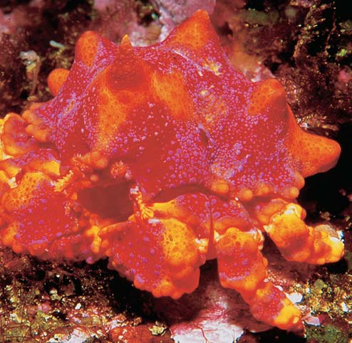
Regulación endocrina 1053
glándula endocrina. Por ejemplo, la glándula tiroides de los vertebrados secreta hormonas que estimulan el metabolismo en los tejidos de todo el cuerpo. Varios tipos de hormonas pueden participar en la regulación de actividades metabólicas de un tipo de célula particular. De hecho, muchas hormonas producen un efecto sinérgico en el que la presencia de una hormona mejora los efectos de otra.
El sistema endocrino y el sistema nervioso interactúan para regular el cuerpo
El sistema endocrino trabaja estrechamente con el sistema nervioso para mantener la homeostasis , el ambiente interno en equilibrio del cuerpo. Recuerde de los capítulos 41 y 42 que el sistema nervioso responde con rapidez a los estímulos al transmitir señales eléctricas y químicas. Las neuronas envían señales a las células musculares y glandulares, incluidas las células endocrinas. El sistema endocrino envía señales a una gama mucho más amplia de tipos de células objetivo que el sistema nervioso. En general, el sistema endocrino reacciona con más lentitud que el sistema nervioso, aunque sus respuestas pueden ser más duraderas. Como se verá, el sistema nervioso ayuda a regular muchas respuestas endocrinas. Por ejemplo, cuando el cuerpo es amenazado, el hipotálamo señala a las glándulas suprarrenales que secreten la hormona epinefrina. El hipotálamo, que es el enlace entre los sistemas nervioso y endocrino, también produce varias hormonas (neurohormonas), incluidas hormonas que regulan la glándula pituitaria. Los sistemas nervioso y endocrino trabajan de manera aún más difusa cuando se considera que la misma molécula señalizadora puede funcionar como neurotransmisor o como hormona, dependiendo de su origen. (Tal vez el lector recuerde de los capítulos 41 y 42 que la norepinefrina es secretada en la sinapsis por neuronas en el cerebro y por el sistema simpático). La norepinefrina también es secretada como una hormona por la médula suprarrenal, un órgano endocrino.
Los sistemas de retroalimentación negativa regulan la actividad endocrina
Aunque están presentes en cantidades minúsculas, más de 50 hormonas diferentes pueden estar circulando en la sangre de un vertebrado en cualquier instante. Las moléculas de hormonas se mueven continuamente fuera de la circulación y se unen con sus células diana. Son eliminadas de la sangre por el hígado, que inactiva algunas de ellas, y por los riñones, que las excretan. La mayor parte de la acción endocrina es regulada por sistemas de retroalimentación negativa , estudiados en el capítulo 39. Las glándulas paratiroides, situadas en el cuello de los vertebrados tetrápodos, constituyen un buen ejemplo de regulación endocrina ( FIGURA 49-1 ). Las glándulas paratiroides regulan la concentración de calcio de la sangre. Cuando la concentración de calcio no está dentro de los límites homeostáticos, los nervios y los músculos no pueden funcionar de manera adecuada. Por ejemplo, cuando hay muy pocos iones calcio presentes, las neuronas se activan espontáneamente, provocando espasmos muscu lares. Cuando la concentración de calcio varía demasiado con respecto al estado estable (hacia arriba o hacia abajo), los sistemas de retroalimentación negativa restauran la homeostasis. Un decremento en la concentración de calcio en el plasma señala a las glándulas paratiroides que liberen más hormona paratiroide, la cual incrementa la concentración de calcio en la sangre.
Algunos de estos receptores “huérfanos” reconocen hormonas que todavía no han sido identifi cadas. Mediante esta estrategia, los investigadores han identifi cado vías de señalización intracelular para esteroides, ácidos grasos y varios otros compuestos. De manera interesante, muchas vías de señalización comparten las mismas moléculas, inclusive si responden a estímulos diferentes y activan respuestas distintas. Queda mucho por aprender sobre la manera en que vías semejantes conducen a muchas acciones celulares diversas y muy específi cas. En este capítulo se aborda cómo el sistema endocrino regula los procesos vitales. La atención se centra en la manera en que las hormonas mantienen la homeostasis y se analiza cómo la sobreproducción o defi ciencia de varias hormonas interfi ere con el funcionamiento normal.
49.1 PANORAMA DE LA REGULACIÓN ENDOCRINA
OBJETIVOS DE APRENDIZAJE
1 Comparar la función del sistema endocrino con la del sistema nervioso y describir cómo estos sistemas trabajan juntos para regular los procesos del cuerpo. 2 Resumir la regulación de la acción endocrina por medio de sistemas de reatroalimentación negativa. 3 Identifi car cuatro grupos químicos principales a los que son asignadas las hormonas y proporcionar dos ejemplos de cada uno.
El sistema endocrino es una colección diversa de células, tejidos y órganos, incluyendo glándulas endocrinas especializadas que producen y secretan hormonas , mensajeros químicos que regulan muchos procesos fi siológicos. El término hormona se deriva de una palabra griega que signifi ca “excitar”. Las hormonas excitan, o estimulan, cambios en tejidos específi cos. Las glándulas endocrinas difi eren de las glándulas exocrinas (como las sudoríparas y gástricas) en que estas últimas liberan sus excreciones hacia conductos. Las glándulas endocrinas no tienen conductos y secretan sus hormonas hacia el fl uido intersticial o la sangre circundante. Los endocrinólogos han identifi cado alrededor de diez glándulas endocrinas distintas. También han descubierto células especializadas en el tracto digestivo, corazón, riñones y muchas otras partes del cuerpo que liberan hormonas o sustancias semejantes a éstas. Como resultado de estos descubrimientos, el alcance de la endocrinología ahora incluye la producción y los efectos de mensajeros químicos producidos por una amplia variedad de órganos, tejidos y células. 1
Las hormonas suelen ser transportadas por la sangre. Producen una respuesta característica sólo después de unirse con receptores específi cos en células diana o blanco , las cuales son infl uidas por una hormona particular. Las células diana pueden estar en otra glándula endocrina o en un tipo de órgano totalmente diferente, como un hueso o un riñón. Las células diana pueden estar ubicadas lejos de la
1 Las feromonas son mensajeros químicos que liberan los animales para comunicarse con otros de su misma especie. Debido a que las feromonas suelen ser producidas por glándulas exocrinas y no regulan actividades metabólicas dentro del animal que las produce, la mayoría de los biólogos no las clasifi can como hormonas. Su papel en la regulación del comportamiento se analiza en el capítulo 52.
1054 Capítulo 49
(también conocida como adrenalina) y la norepinefrina (también conocida como noradrenalina), producidas por la médula de la glándula suprarrenal, también se derivan de la tirosina. La melatonina es sintetizada a partir del aminoácido triptófano. Las hormonas péptidas solubles en agua son el grupo hormonal más grande. (Muchos endocrinólogos incluyen las hormonas proteínicas en este grupo). Los neuropéptidos son un gran grupo de moléculas de señalización producidas por las neuronas. La oxitocina y la hormona antidiurética (HAD), producidas en el hipotálamo, son neuropéptidos cortos, cada uno compuesto por nueve aminoácidos ( FIGURA 49-2d ). Siete de los aminoácidos son idénticos en las dos hormonas, aunque las acciones de éstas son totalmente diferentes. Las hormonas glucagón (vea la fi gura 3-19), secretina, hormona adrenocorticotrópica (HACT) y calcitonina son péptidos algo más largos, cada uno de los cuales consta de alrededor de 30 aminoácidos. La insulina es una proteína pequeña que consta de dos cadenas de péptidos unidas por enlaces disulfuro. La hormona del crecimiento, la hormona estimulante de la tiroides y las hormonas gonadotrópicas, secretadas por el lóbulo anterior de la glándula pituitaria, son proteínas grandes cuyos pesos moleculares son de 25,000 o más.
Repaso
■ ¿Qué son las células diana?
■ ¿Cómo trabajan juntos los sistemas nervioso y endocrino?
■ ¿Cómo trabaja la retroalimentación negativa?
■ ¿Cómo responde el cuerpo cuando la concentración de calcio en la sangre está por debajo del nivel homeostático?
■ ¿Cuáles son los cuatro grupos químicos principales de las hormonas? Proporcione un ejemplo de cada uno.
Cuando la concentración de calcio sube por arriba de los límites normales, las glándulas paratiroides disminuyen su producción de hormona. Ambas respuestas son sistemas de retroalimentación negativa. Un incremento en la concentración de calcio resulta en una disminución de la liberación de hormona paratiroide, mientras que un decremento en el calcio lleva a un aumento en la secreción de la hormona. En cualquier caso, la respuesta contrarresta el cambio inadecuado, restaurando el estado estable. (La acción paratiroide se aborda con mayor detalle más adelante en el capítulo).
Las hormonas son asignadas a cuatro grupos químicos
Aunque las hormonas son químicamente diversas, suelen pertenecer a uno de cuatro grupos químicos: (1) derivados de ácidos grasos, (2) esteroides, (3) derivados de aminoácidos o (4) péptidos o proteínas. Las prostaglandinas y las hormonas juveniles de los insectos son derivados de ácidos grasos ( FIGURA 49-2a ). Las prostaglandinas son sintetizadas a partir del ácido araquidónico, un ácido graso de 20 carbonos. Una prostaglandina tiene un anillo de cinco carbonos en su estructura. La hormona de la muda de piel de los insectos es una hormona esteroide ( FIGURA 49-2b ). En los vertebrados, la corteza suprarrenal, los testículos, el ovario y la placenta secretan hormonas esteroides sintetizadas a partir del colesterol. Algunos ejemplos de hormonas esteroides son el cortisol, secretado por la corteza suprarrenal, la testosterona, hormona masculina reproductora secretada por los testículos; y la progesterona y el estrógeno, hormonas femeninas reproductoras producidas por el ovario. Los atletas (y otros) algunas veces abusan de las hormonas sintéticas conocidas como esteroides anabólicos (vea Preguntas acerca de: Esteroides anabólicos y otras hormonas de las que se abusa ). Químicamente, las hormonas más simples son derivados de aminoácidos ( FIGURA 49-2C ). Las hormonas de la tiroides (T 3 y T 4 ) son sintetizadas a partir del aminoácido tirosina y del yoduro. La epinefrina
Muy alto
Muy bajo
Nivel de calcio
Tiempo
Intervalo normal
El nivel de Ca 2 + excede el intervalo normal: inhibe las glándulas paratiroides
La concentración de Ca 2 + en la sangre está por debajo del intervalo normal: estimula las glándulas paratiroides
Secreta menos hormona paratiroide
Menos Ca 2 + es liberado en la sangre
Más Ca 2 + es liberado en la sangre
Secreta más hormona paratiroide
INTERVALO HOMEOSTÁTICO
FIGURA 49-1 Regulación por retroalimentación negativa No importa si la concentración de calcio en la sangre es demasiado alta o demasiado baja, los mecanismos de retroalimentación negativa restauran la homeostasis. La hormona paratiroide incrementa la concentración de calcio al estimular la liberación de calcio del hueso y la reabsorción de calcio por los túbulos del riñón. (Vea en la fi gura 49-11 diagramas más detallados de la regulación de la hormona paratiroide).
▲
Regulación endocrina 1055
49.2 TIPOS DE SEÑALIZACIÓN ENDOCRINA
■ ■ OBJETIVO DE APRENDIZAJE
4 Comparar cuatro tipos de señalización endocrina.
Las hormonas envían señales a sus células diana por medio de señalización endocrina clásica, señalización neuroendocrina, señalización autoendocrina y señalización paracrina. En la señalización endocrina clásica , las hormonas son secretadas por glándulas endocrinas y transportadas por la sangre a células diana ( FIGURA 49-3a ). Las hormonas esteroides y las hormonas de la tiroides son transportadas unidas a proteínas plasmáticas. Las hormonas péptidas solubles en agua se disuelven en el plasma. Las hormonas salen de la sangre con el plasma y están presentes en el fl uido intersticial.
Las neurohormonas son transportadas en la sangre
Ciertas neuronas, conocidas como células neuroendocrinas , son un vínculo importante entre los sistemas nervioso y endocrino. En la señalización neuroendocrina , las células neuroendocrinas producen neurohormonas que son transportadas por los axones y liberadas hacia el fl uido intersticial. Suelen difundirse en capilares y son transportadas por la sangre ( FIGURA 49-3b ). Los sistemas endocrinos de los invertebrados son bastante neuroendocrinos. En los vertebrados, el hipotálamo produce neurohormonas que vinculan el sistema nervioso con la glándula pituitaria, una glándula endocrina que secreta varias hormonas.
Algunos reguladores locales son considerados hormonas
Un regulador local es una molécula de señalización que se difunde por el fl uido intersticial y actúa sobre células próximas. La mayoría de los endocrinólogos incluyen por lo menos ciertos reguladores locales como hormonas. También, algunos compuestos químicos que actúan como hormonas clásicas (transportadas por la sangre) funcionan como reguladores locales en ciertas condiciones.
CH 2 CH 3
CH 3
C CH CH 2 CH 2 C CH CH 2 CH 2 C CH
O CH 2 CH 3 CH 3
COOCH 3
O
HO C OH O
CH 2 OH
HO
OH
O HO
HO CH 3
OH
CH 3
CH 3 OH CH 3
CH 3 OH
CH CH 2
CH
HO
HO
CH CHOH CH 2 CH 2 CH 2 CH 2 CH 3
CH CH 2 CH 2 CH 2 COO –
- Hormonas derivadas de ácidos grasos
Hormona juvenil
Una prostaglandina
- Hormonas esteroides
Hormona de la muda de piel (ecdisona) Cortisol Estradiol (estrógeno principal)
- Derivados de aminoácidos (d) Hormonas péptidas
C
H
OH
C
NH 3 +
H
H HO
HO
HO
I
O
I
I
CH 2 C
NH 3 +
COO –
H
HO
I
I
O
I
I
CH 2 C
NH 3 +
COO –
H
Hormonas de la tiroides
Nor Norepinefrina
Epinefrina
(T Tiroxina 4 )
Triyodotironina (T 3 )
Cys
H
Tyr
Ile
Glu N
Asp N
Cys
Pro
Leu
Gly
NH 2
S
S
Cys
H
Tyr
Phe
Glu N
Asp N
Cys
Pro
Arg
Gly
NH 2
S
S
Oxitocina ADH
C
H
OH
C
- H 2 N
H
H HO
HO CH 3
CH 3
CH 3 CH 3
FIGURA 49-2 Principales grupos químicos de hormonas
1056 Capítulo 49
vuelvan más permeables. El óxido nítrico (NO) , otro regulador local, es un gas producido por muchos tipos de células, incluidas las que revisten los vasos sanguíneos. El NO relaja las fi bras de músculo liso en la pared del vaso sanguíneo, provocando su dilatación. (Vea el análisis del óxido nítrico en el capítulo 6). Las prostaglandinas son ácidos grasos modifi cados liberados continuamente por las células de la mayoría de los tejidos. Estas hormonas locales usan señalización paracrina. Aunque las prostaglandinas están presentes en cantidades muy pequeñas, afectan una amplia gama de procesos fi siológicos. Modifi can los niveles de monofosfato de adenosina (AMP) cíclico e interactúan con otras hormonas para regular varias actividades metabólicas. El principal objetivo de las prostaglandinas es el músculo liso. Algunas prostaglandinas estimulan la contracción del músculo liso, mientras
Los reguladores locales usan señalización autocrina o paracrina . En la señalización autocrina , una hormona u otro regulador actúa sobre las células mismas que la producen ( FIGURA 49-3c ). Por ejemplo, la hormona femenina estrógeno, que funciona como una hormona clásica, también puede ejercer un efecto autocrino que estimula la secreción de estrógeno adicional. A veces, el estrógeno actúa sobre células próximas, un tipo de regulación local conocida como señalización paracrina ( FIGURA 49-3d ). Los reguladores locales incluyen mediadores químicos como factores de crecimiento, histamina, óxido nítrico y prostaglandinas. Más de 50 factores de crecimiento , típicamente péptidos, estimulan la división celular y el desarrollo normal en tipos específi cos de células. (Recuerde del capítulo 45 que la histamina es almacenada en los mastocitos y liberada en respuesta a reacciones alérgicas, lesión o infección). La histamina provoca la dilatación de los vasos sanguíneos y que los capilares se
¿Por qué se abusa de los esteroides anabólicos y algunas otras hormonas? Se estima que un millón de personas en Estados Unidos, la mitad de ellos adolescentes, abusa de ciertas hormonas con la intención de mejorar su rendimiento físico. Los esteroides anabólicos, un grupo de hormonas sintéticas, se denominan ofi cialmente esteroides androgénicos anabólicos (AAS por sus siglas en inglés). Los esteroides anabólicos son andrógenos sintéticos (hormonas reproductoras masculinas) que fueron desarrollados en la década de 1930 para evitar la atrofi a muscular en pacientes con enfermedades que les impedían moverse. En la década de 1950, los esteroides anabólicos se popularizaron entre los atletas profesionales, que los usaban para aumentar su masa corporal, resistencia, fuerza física y dinamismo. En verdad, su rendimiento atlético quizá se incrementó, por lo menos de manera parcial, por la euforia inducida por los fármacos y el aumento en el entusiasmo por entrenar. El término dopaje se refi ere al uso de sustancias como los esteroides anabólicos, que pueden mejorar el rendimiento pero son potencialmente dañinas. Lo mismo que con otras hormonas, la concentración de esteroides que circulan en el cuerpo es regulada con precisión, de modo que el uso de esteroides anabólicos interfi ere con los procesos fi siológicos normales. Estos fármacos permanecen en el cuerpo durante mucho tiempo. Sus metabolitos (productos de descomposición) pueden detectarse en la orina hasta por seis meses. Inclusive durante el uso a corto plazo y en dosis relativamente bajas, los esteroides anabólicos tienen un efecto importante en el estado de ánimo y el comportamiento. En dosis más altas, los usuarios experimentan procesos de pensamiento perturbados, olvido y confusión y a menudo se encuentran fácilmente distraídos. El término rabia de esteroides se refi ere a los cambios de humor, ira impredecible, agresividad
aumentada y comportamiento irracional mostrado por muchos usuarios. El mal uso de los esteroides anabólicos plantea muchos riesgos para la salud. Estos fármacos incrementan el riesgo de enfermedad cardiovascular al elevar la presión arterial y disminuir la concentración de lipoproteínas de alta densidad (HDL; el colesterol “bueno”). Los esteroides anabólicos provocan daño al riñón y al hígado y aumentan el riesgo de cáncer de hígado. El abuso de estas hormonas también reduce la función sexual. En los hombres, la secreción de testosterona disminuye y los testículos se encogen, conduciendo a esterilidad. En las mujeres, el abuso de esteroides anabólicos puede provocar infertilidad, así como la aparición de rasgos masculinos como vello facial y una disminución en el tamaño de los senos. En los adolescentes ocasionan acné grave y atrofi an el crecimiento al cerrar de manera prematura las placas de crecimiento en los huesos. Los esteroides anabólicos son inyectados o tomados en forma de píldoras. Quienes abusan de los esteroides y comparten agujas o usan técnicas no estériles cuando se los inyectan están en riesgo de contraer hepatitis, VIH y otras infecciones graves. Cuando se comenzaron a conocer sus graves efectos colaterales en la década de 1960, el uso de los esteroides anabólicos se volvió polémico, y en 1973 el Comité Olímpico prohibió su uso. Ahora están prohibidos en todo el mundo por organizaciones deportivas de afi cionados y profesionales. En Estados Unidos, la posesión de esteroides anabólicos sin una prescripción médica es un delito federal. Sin embargo, a pesar de los riesgos, el mercado negro de estas hormonas sintéticas se estima en más de 1000 millones de dólares al año. Un análisis reciente determinó que casi un tercio de los esteroides anabólicos comprados ilegalmente no contiene los fármacos indicados en sus etiquetas. Casi 50% de los esteroides anabólicos que contenían los
fármacos ofrecidos eran entregados en dosis mucho menores o mucho mayores. Además, los fármacos adquiridos ilegalmente suelen estar contaminados con metales pesados tóxicos (por ejemplo, plomo y arsénico). El usuario típico de esteroides anabólicos suele ser un atleta (65%) hombre (95%), más a menudo jugador de futbol, levantador de pesas o luchador. Sin embargo, de manera sorprendente, alrededor de 10% de los estudiantes varones de secundaria han utilizado esteroides anabólicos y aproximadamente un tercio de éstos ni siquiera pertenece a algún equipo deportivo de su escuela. Estos adolescentes usan la hormona sólo para modifi car su apariencia física: para darle vida a sus múscu los (hacerlos crecer) e incrementar su resistencia. Muchos usuarios de esteroides anabólicos tienen difi cultad en percibir de manera realista sus imágenes corporales. Siguen siendo infelices inclusive después de haber incrementado en forma espectacular su masa muscular. Algunas personas también abusan de otras hormonas, incluyendo la hormona del crecimiento humana (HCH) y la eritropoyetina. La hormona del crecimiento humana, como los esteroides anabólicos, ayuda a construir masa muscular pero también provoca acromegalia, una condición en la que algunos huesos se engruesan anormalmente. La hormona del crecimiento humana también puede provocar diabetes e incrementar el tamaño del corazón, lo cual puede conducir a insufi ciencia cardiaca. La eritropoyetina, una hormona producida por el riñón, aumenta la concentración de glóbulos rojos, lo que incrementa el transporte de oxígeno. Esta hormona puede mejorar el rendimiento de un atleta de resistencia hasta en 10% durante períodos cortos. Sin embargo, concentraciones anormalmente altas de glóbulos rojos pueden ocasionar graves problemas cardiovasculares. El abuso de la eritropoyetina ha provocado la muerte de varios atletas.
Preguntas acerca de
ESTEROIDES ANABÓLICOS Y OTRAS HORMONAS DE LAS QUE SE ABUSA
Regulación endocrina 1057
Una hormona presente en el fl uido intersticial permanece “inadvertida” hasta que llega a sus células diana, las cuales tienen receptores que la reconocen y se unen a ella. Los receptores de hormonas son proteínas grandes o glicoproteínas. Recuerde que el sitio de recepción semeja a una cerradura y que las hormonas son como llaves diferentes. Sólo la hormona que se ajusta al receptor específi co puede infl uir la maquinaria metabólica de la célula (vea el capítulo 6). Los receptores son responsables de la especifi cidad del sistema endocrino. Los receptores son sintetizados y degradados continuamente. Sus cantidades son aumentadas o disminuidas por regulación por disminución del receptor y regulación por aumento del receptor . Por ejemplo, cuando la concentración de una hormona es demasiado elevada durante un largo período, las células disminuyen el número de receptores para esa hormona. La regulación por disminución reduce la sensibilidad de las células diana hacia la hormona, de modo que amortigua la habilidad de esta última para llevar a cabo su función. La regulación por aumento ocurre cuando la concentración de una hormona particular es demasiado baja. Incrementar el número de receptores en la membrana plasmática aumenta el efecto de la hormona sobre la célula.
Algunas hormonas entran en células diana y activan genes
Las hormonas esteroides y las hormonas de la tiroides son moléculas relativamente pequeñas, solubles en lípidos (hidrofóbicas) que pasan fácilmente a través de la membrana plasmática de la célula diana. Los receptores de proteínas específi cos en el citoplasma o en el núcleo se unen con la hormona para formar un complejo hormona-receptor ( FIGURA
49-4 ). Por ejemplo, las hormonas de la tiroides se unen con receptores en el núcleo que son factores de transcripción. Una vez activadas por la
otras ocasionan su relajación. Así, algunas reducen la presión arterial mientras otras la elevan. Las prostaglandinas sintetizadas en el centro regulador de temperatura en el hipotálamo provocan fi ebre. De hecho, los medicamentos antiinfl amatorios no esteroides (NSAID), como aspirina e ibuprofeno, disminuyen la fi ebre y reducen la infl amación y el dolor al inhibir la síntesis de prostaglandina. Debido a que las prostaglandinas están implicadas en la regulación de tantos procesos metabólicos, poseen un gran potencial para una variedad de usos clínicos. Los médicos las usan para inducir el trabajo de parto y el aborto, y para promover la curación de úlceras en el estómago y el duodeno. Las prostaglandinas podrían utilizarse algún día para tratar una variedad de enfermedades, incluyendo asma, artritis, enfermedades renales, ciertos trastornos cardiovasculares y algunas formas de cáncer.
Repaso
■ ¿Qué es la señalización neuroendocrina?
■ ¿Qué son los reguladores locales?
■ ¿En qué son diferentes la señalización autocrina y la paracrina?
■ ¿Cuáles son dos funciones de las prostaglandinas?
49.3 MECANISMOS DE LA ACCIÓN HORMONAL
OBJETIVO DE APRENDIZAJE
5 Comparar el mecanismo de acción de pequeñas hormonas solubles en lípidos con el de las hormonas hidrófi las; incluir el papel de segundos mensajeros, como el AMP cíclico.
Célula endocrina
Respuesta
Respuesta
Hormona
Transportada en la sangre
Célula diana
Hormona (molécula de señalización)
Receptor
Neurohormona
Respuesta
Hormona
Se difunde por el fluido intersticial
Célula neuroendocrina
Se difunde por el fluido intersticial
Transportada en la sangre
Hormona
Célula diana
Señalización endocrina clásica. Las células endocrinas liberan hormonas que son transportadas a células diana por la sangre.
Señalización neuroendocrina. Las neuronas liberan neurohormonas, que son transportadas por la sangre o se difunden por el fluido intersticial.
Señalización autocrina. Una hormona actúa sobre las mismas células que la producen.
Señalización paracrina. Una hormona se difunde por el fluido intersticial y actúa sobre células diana cercanas.
FIGURA 49-3 Algunos tipos de señalización endocrina Las células endocrinas secretan hormonas que envían señales a células diana, conduciendo a un cambio en uno o más procesos celulares.


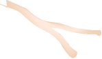
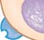
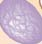
1058 Capítulo 49
e inclusive de segundos. Recientemente fueron descritos receptores de membrana plasmática para dos hormonas esteroides. Es probable que se descubran otros.
Muchas hormonas se unen a receptores en la superfi cie celular
Debido a que las hormonas péptidas son hidrófi las, no son solubles en la capa lipídica de la membrana plasmática y no entran en las células diana. En lugar de eso, se unen a receptores específi cos sobre la superfi cie celu-
hormona, ponen en marcha o reprimen la transcripción de ARN mensajero que codifi ca proteínas específi cas. Las proteínas que son sintetizadas producen cambios en la estructura o en la actividad metabólica. La activación de genes y la síntesis de proteínas pueden llevarse varias horas. Sin embargo, las hormonas esteroides también pueden tener mecanismos de acción más rápidos que no requieren la síntesis de proteínas. Por ejemplo, los investigadores han identifi cado un receptor de estrógeno en la membrana del retículo endoplasmático. Cuando este receptor es activado por el enlace con estrógeno, inicia una rápida señalización que conduce a cambios en la célula en cuestión de minutos
Las hormonas esteroide y de la tiroides son pequeñas moléculas solubles en lípidos que pasan a través de la membrana plasmática y activan o reprimen genes específi cos. La síntesis de proteínas específi cas conduce a cambios que se reconocen como acciones de la hormona.
Vaso sanguíneo
Células de una glándula endocrina
Moléculas hormonales
ARNm
ARNm
1 Las moléculas hormonales pasan a través de la membrana plasmática.
2 La hormona se mueve por el citosol.
3 La hormona pasa a través de la envoltura nuclear y se une con un receptor en el núcleo.
4 El receptor activado es el factor de transcripción que se une a genes específicos y los activa (o reprime).
5 Proteínas específicas son sintetizadas.
6 Las proteínas alteran los procesos celulares.
Célula diana
Núcleo
ADN
Ribosoma
Proteína
FIGURA 49-4 Animada Mecanismo de acción de las hormonas esteroide y de la tiroides
PUNTO CLAVE
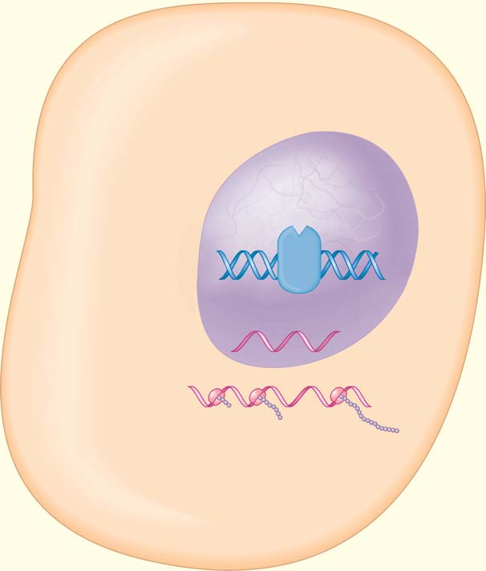
Regulación endocrina 1059
está inactivo, la proteína G se une al difosfato de guanosina (DFG) , que es semejante al ADP, la forma hidrolizada del ATP. Las proteínas G transportan una señal entre el receptor y un segundo mensajero. Cuando un receptor ligado a hormonas se une a una proteína G estimulatoria, ésta libera TFG y lo reemplaza con TFG. La proteína G experimenta un cambio en su confi guración que le permite unirse con la enzima adenilil ciclasa y activarla en el lado citoplasmático de la membrana plasmática. Una vez activada, la adenilil ciclasa cataliza la conversión de ATP en AMP cíclico ( AMPc ). Al acoplarse el complejo hormona-receptor con una enzima que genera una señal, las proteínas G amplifi can los efectos de la hormona y rápidamente son producidas muchas moléculas de segundos mensajeros. Un tipo de proteína G, la G S , estimula la adenilil ciclasa y otra, la G i , la inhibe. El AMP cíclico activa proteínas quinasas , enzimas que fosforilan (agregan un grupo fosfato a) proteínas específi cas. Una vez fosforilada, la proteína quinasa es activada y puede fosforilar la siguiente proteína en la ruta. Una cadena de reacciones conduce a algún cambio metabólico. Los sustratos para la proteína quinasa son diferentes en varios
lar en la membrana plasmática. Dos tipos principales de receptores en la superfi cie celular que se unen a hormonas son los receptores acoplados a proteínas G y los asociados a enzimas. Estos receptores se analizaron con detalle en el capítulo 6. Aquí se revisarán algunos conceptos básicos.
Los receptores acoplados a proteínas G inician la transducción de señales Los receptores acoplados a proteínas G son proteínas transmembrana que inician la transducción de señales ; convierten una señal hormonal extracelular en una señal intracelular que afecta algunos procesos celulares. La hormona no entra en la célula. Sirve como el primer mensajero y transmite la información a un segundo mensajero o señal intracelular. Luego, el segundo mensajero envía señales a las moléculas efectoras para que lleven a cabo la acción. Los receptores acoplados a proteínas G activan proteínas G , un grupo de proteínas regulatorias integrales ( FIGURA 49-5 ). La G indica que se unen a trifosfato de guanosina (TFG) el cual, como el ATP, es una molécula importante en reacciones energéticas. Cuando el sistema
Las hormonas péptidas se unen con receptores en la membrana plasmática. El receptor es un transductor de señal que convierte la señal hormonal en una señal intracelular, la cual es trasmitida por un segundo mensajero.
TFG
AMPc AMPc
AMPc
AMPc
Hormona
Segundo mensajero
Membrana plasmática de célula diana
Citosol
Fluido extracelular
Altera el metabolismo Afecta la actividad genética
Abre o cierra canales iónicos
Adenilil ciclasa Receptor Proteína G
Proteína Proteína Proteína
ATP
1 La hormona péptida (primer mensajero) se une con un receptor acoplado a proteína G en la membrana plasmática de la célula diana. La proteína G es activada y pone en acción a la enzima adenilil ciclasa.
2 La adenilil ciclasa convierte el ATP en AMPc (segundo mensajero).
3 El AMPc transmite la señal; activa la proteína quinasa o alguna otra proteína que conduce a una respuesta. Algo de la actividad celular es alterado.
Vaso sanguíneo
Células de una glándula endocrina
FIGURA 49-5 Animada Mecanismo de acción de las hormonas péptidas Muchas hormonas péptidas envían señales a células diana mediante un receptor acoplado a una proteína G. El AMP cíclico, o algún otro segundo mensajero, retransmite la señal al activar una cascada de reacciones de fosforilación. La proteína fi nal en la ruta cambia algún proceso celular (la acción de la hormona).
PUNTO CLAVE

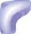
1060 Capítulo 49
para regular el metabolismo, el crecimiento y el desarrollo, incluyendo la muda de piel y la metamorfosis. El control hormonal del desarrollo en los insectos varía entre las especies. Por lo general, algún factor ambiental (como un cambio de temperatura) activa las células endocrinas en el cerebro. Luego, estas células producen una neurohormona denominada hormona del cerebro ( BH ), que es transportada por los axones y almacenada en pares de cuerpos cardiacos ( FIGURA 49-6 ). Cuando la hormona cerebral es liberada de los cuerpos cardiacos, estimula las glándulas protorácicas, glándulas endocrinas en el protórax, para producir hormona de la muda (HM) , también denominada ecdisona (vea la figura 49-2b). La hormona de la muda, una hormona esteroide, estimula el crecimiento y la muda de piel. En el insecto inmaduro, un par de glándulas endocrinas denominadas corpora allata (en singular, corpus allatum ) secretan hormona juvenil (HJ) . Ésta suprime la metamorfosis en cada muda larval, de modo que el insecto aumenta de tamaño mientras permanece en su estado inmaduro; después de la muda, el insecto sigue en estado larvario. Cuando la concentración de HJ disminuye por debajo de algún nivel crítico, ocurre la metamorfosis y el insecto se transforma en una pupa (vea el capítulo 31). En ausencia de la hormona juvenil, la pupa muda y se transforma en adulto. El sistema nervioso regula la actividad secretoria de los corpora allata y la cantidad de hormona juvenil decrece con cada muda sucesiva.
Repaso
■ ¿Cuáles son cuatro acciones de las hormonas en los invertebrados?
■ ¿Cuál es la función de la hormona juvenil en los insectos?
49.5 REGULACIÓN ENDOCRINA EN VERTEBRADOS
OBJETIVOS DE APRENDIZAJE
7 Identifi car las glándulas endocrinas clásicas de los vertebrados y describir las acciones de sus hormonas. Describir los efectos de la hipersecreción y la hiposecreción sobre la homeostasis. 8 Describir los mecanismos por los cuales el hipotálamo y la glándula pituitaria integran funciones regulatorias; resumir las acciones de las hormonas hipotalámica y pituitaria. 9 Describir las acciones de las hormonas de la tiroides y paratiroides, su regulación y los efectos de su mal funcionamiento. 10 Contrastar las acciones de la insulina y el glucagón, y describir la diabetes mellitus y la hipoglicemia, incluyendo los efectos metabólicos de estos trastornos. 11 Resumir las acciones y la regulación de las hormonas suprarrenales, incluyendo su papel en la respuesta del cuerpo al estrés.
Las hormonas de los vertebrados regulan actividades tan diversas como el crecimiento y el desarrollo, la reproducción, la tasa metabólica, el equilibrio de líquidos, la homeostasis sanguínea y la respuesta al estrés. La mayoría de los vertebrados tienen glándulas endocrinas semejantes, aunque las acciones de algunas hormonas pueden diferir en varios grupos de vertebrados. La TABLA 49-1 proporciona las fuentes, los tejidos diana y las acciones fi siológicas principales de algunas de las hormonas más importantes de los vertebrados. El hipotálamo y la glándula pitui-
tipos de células, por lo que el efecto del AMPc varía. En las células del músculo esquelético, una proteína quinasa dispara la descomposición de glicógeno en glucosa, mientras que en las células del hipotálamo, una proteína quinasa activa el gen que codifi ca una hormona inhibidora del crecimiento. Recuerde del capítulo 6 que algunas proteínas G usan fosfolípidos como segundos mensajeros. Ciertos complejos hormona-receptor activan una proteína G que luego activa la fosfolipasa C, una enzima unida a membrana (vea la fi gura 6-9). Esta enzima divide un fosfolípido de membrana en dos productos, inositol trifosfato (IP 3 ) y diacilglicerol (DAG) . Ambos actúan como segundos mensajeros. El DAG (en combinación con iones calcio) activa una proteína quinasa que fosforila una variedad de proteínas. El IP 3 abre los canales de calcio en el retículo endoplasmático liberando iones calcio hacia el citosol. Los iones calcio se unen a ciertas proteínas, como la calmodulina . Luego, la calmodulina activada estimula otras proteínas.
Los receptores asociados a enzimas funcionan directamente
Los receptores asociados a enzimas son proteínas transmembrana con un sitio de unión hormonal fuera de la célula y un sitio enzimático dentro de ella (vea la fi gura 6-5c). Estos receptores no están acoplados a proteínas G. Funcionan directamente como enzimas o están asociados directamente a enzimas. La mayoría de los receptores asociados a enzimas son receptores de tirosina quinasas que se unen a factores de crecimiento y otras moléculas de señalización, incluida la insulina. Cuando el receptor es activado, fosforila el aminoácido tirosina en proteínas específi cas de señalización dentro de la célula.
Repaso
■ ¿Cuáles son las funciones de los receptores y segundos mensajeros en la acción hormonal?
■ ¿En qué se diferencian las hormonas esteroides y péptidas en sus mecanismos de acción?
■ ¿Cuál es el mecanismo de acción de una hormona que usa AMP cíclico como segundo mensajero?
49.4 REGULACIÓN NEUROENDOCRINA EN INVERTEBRADOS
OBJETIVO DE APRENDIZAJE
6 Identifi car cuatro funciones de las neurohormonas de invertebrados y describir la regulación del desarrollo de insectos.
Entre los invertebrados, las hormonas son secretadas principalmente por neuronas, en lugar de por glándulas endocrinas. Estas neurohormonas regulan la regeneración en hidras, platelmintos y anélidos; los cambios de color en crustáceos; y el crecimiento, desarrollo, metabolismo, producción de gametos y reproducción (incluido el comportamiento reproductivo) en muchos otros grupos. Las tendencias en la evolución de los sistemas endocrinos de los invertebrados incluyen un número creciente tanto de neurohormonas como de hormonas secretadas por glándulas endocrinas y un mayor papel de las hormonas en los procesos fi siológicos. Los insectos tienen glándulas endocrinas y células neuroendocrinas. Sus varias hormonas y neurohormonas interactúan entre sí
Regulación endocrina 1061
tanto anatómica como fi siológicamente. La glándula pituitaria está conectada al hipotálamo por el tallo hipofi sario. En respuesta a la entrada de otras áreas del cerebro y de hormonas en la sangre, las neuronas del hipotálamo secretan neurohormonas que regulan procesos fi siológicos específi cos. Debido a que las secreciones de la glándula pituitaria controlan las actividades de varias otras glándulas endocrinas, los biólogos se refi eren a aquélla como la glándula maestra del cuerpo. Aunque su tamaño es el de un guisante y pesa sólo alrededor de 0.5 g, la glándula pituitaria produce seis hormonas péptidas que ejercen una infl uencia de gran alcance sobre el crecimiento, metabolismo, reproducción y muchas otras actividades corporales. La glándula pituitaria humana consta de dos partes principales: el lóbulo anterior y el lóbulo posterior . En algunos vertebrados también hay un lóbulo intermedio.
El lóbulo posterior de la glándula pituitaria libera hormonas producidas por el hipotálamo
El lóbulo posterior de la glándula pituitaria se desarrolla a partir de tejido cerebral. Este órgano neuroendocrino secreta dos hormonas péptidas: oxitocina y hormona antidiurética , o HAD , también conocida como vasopresina . La oxitocina y la HAD en realidad son
taria regulan muchas de estas hormonas. Las glándulas endocrinas más importantes en los humanos se ilustran en la FIGURA 49-7 .
La homeostasis depende de las concentraciones normales de hormonas
Cuando un desorden o un proceso de enfermedad afecta una glándula endocrina, la tasa de secreción puede volverse anormal. Si ocurre hiposecreción (producción anormalmente reducida), las células diana son privadas de la estimulación necesaria. Si ocurre hipersecreción (producción anormalmente aumentada), las células diana pueden ser estimuladas en exceso. En algunos trastornos endocrinos, se secreta una cantidad idónea de hormona, pero los receptores de las células diana no funcionan de manera adecuada. Como resultado, las células diana no pueden responder a la hormona. Cualquiera de estas anormalidades conduce a pérdida de homeostasis, resultando en mal funcionamiento metabólico y síntomas clínicos predecibles ( TABLA 49-2 ).
El hipotálamo regula la glándula pituitaria
La mayoría de la actividad endocrina es controlada directa o indirectamente por el hipotálamo , que vincula los sistemas nervioso y endocrino
Cerebro
Larva Pupa Adulto
Antena
Cuerpo cardiaco
Corpus allatum
Células neuroendocrinas
Ojo compuesto Tubo traqueal
Esófago
Tórax
Glándula protorácica
HM HM
HM
BH
HJ
HJ baja
HJ ausente
1
2
3
4
Las células neuroendocrinas secretan hormona cerebral (BH), que es almacenada en los cuerpos cardiacos.
Cuando es liberada, la BH estimula las glándulas protorácicas para secretar hormona de la muda (HM), que estimula el crecimiento y la muda de piel.
En los insectos inmaduros, los corpora allata secretan hormona juvenil (HJ), que suprime la metamorfosis en cada muda larvaria.
La metamorfosis a forma adulta ocurre cuando la HM actúa en ausencia de HJ.
FIGURA 49-6 Regulación del crecimiento y la muda de piel en los insectos Las hormonas regulan el desarrollo de los insectos. La mayoría de los insectos pasan por una serie de etapas larvarias y luego experimentan metamorfosis a la forma adulta. La disección de la cabeza de un insecto muestra el cerebro, el par de corpora allata y el par de cuerpos cardiacos.
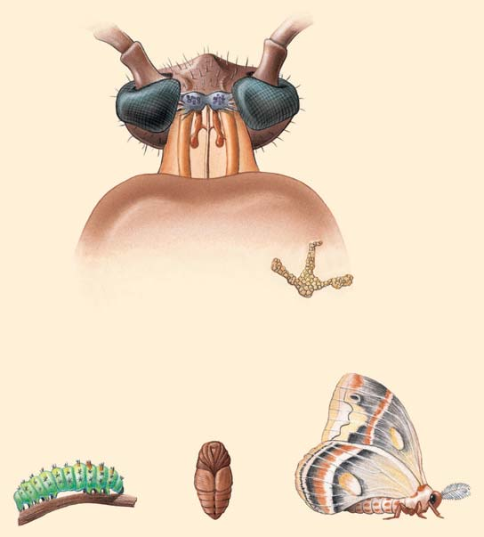
1062 Capítulo 49
las intensas contracciones del útero necesarias para expulsar al bebé. Algunas veces la oxitocina se administra clínicamente para iniciar o acelerar el trabajo de parto. Después del nacimiento, cuando un lactante succiona el pecho de su madre, neuronas sensibles señalan a la pituitaria que libere oxitocina. La hormona estimula la contracción de las células del músculo liso que rodean las glándulas mamarias de modo que la leche sea liberada hacia los conductos, poniéndola a disposición del lactante. Debido a que la oxitocina también estimula la contracción del útero, la lactancia promueve la recuperación del útero a su tamaño antes del embarazo.
producidas por células neuroendocrinas en dos áreas distintas del hipotálamo. Estas hormonas están encerradas dentro de vesículas y son transportadas por los axones de las células neuroendocrinas en el lóbulo posterior de la glándula pituitaria ( FIGURA 49-8 ). Las vesículas son almacenadas en las terminales del axón hasta que la neurona es estimulada. Luego, las hormonas son liberadas y se difunden hacia los capilares circundantes. En el capítulo 48 se analizó la función de la HAD. Recuerde que la HAD estimula la reabsorción de agua en los riñones. La concentración de oxitocina en la sangre sube hacia el fi nal del embarazo, estimulando
Algunas glándulas endocrinas de los vertebrados y sus hormonas
Glándula Hormona Tejido diana Acciones principales
Hipotálamo Liberar e inhibir Lóbulo anterior de Regula la secreción de hormonas por la pituitaria hormonas la pituitaria anterior
Pituitaria posterior Oxitocina Útero Estimula la contracción (almacenamiento y liberaGlándulas mamarias Estimula la expulsión de leche hacia los conductos ción de hormonas produHormona antidiurética (HAD) Riñones (conductos Estimula la reabsorción de agua cidas por el hipotálamo) colectores)
Pituitaria anterior Hormona del crecimiento (HC) General Estimula el crecimiento del esqueleto y los músculos
Prolactina Glándulas mamarias Estimula la producción de leche
Hormonas estimulantes de Células de pigmento Estimula la producción de melanina en algunos los melanocitos (HEM) en la piel animales; en los humanos, ayuda a regular la ingesta de alimentos
Hormona estimulante de Glándula tiroides Estimula la secreción de hormonas de la tiroides, la tiroides (HET) ayuda a regular el remodelado óseo
Hormona adrenocorticotrópica Corteza suprarrenal Estimula la secreción de hormonas (HACT) de la corteza suprarrenal
Hormonas gonadotrópicas* Gónadas Estimula la función y crecimiento de las gónadas (hormona estimulante del folículo [HSF]; hormona luteinizante [HL]
Glándula tiroides Tiroxina (T 4 ) y General Estimula la tasa metabólica, regula el metabolismo triyodotironina (T 3 ) energético
Calcitonina Hueso Disminuye el nivel de calcio en la sangre
Glándulas paratiroides Hormona paratiroide Hueso, riñones, Regula el nivel de calcio en la sangre tracto digestivo
Páncreas Insulina General Disminuye la concentración de glucosa en la sangre
Glucagón Hígado, tejido adiposo Aumenta la concentración de glucosa en la sangre
Médula suprarrenal Epinefrina y norepinefrina Músculo, vasos sanguíneos, Ayuda al cuerpo a enfrentar el estrés, aumenta la tasa hígado, tejido adiposo metabólica, aumenta la concentración de glucosa en la sangre, incrementa el ritmo cardiaco y la presión arterial
Corteza suprarrenal Mineralocorticoides Túbulos del riñón Mantiene el equilibrio del sodio y potasio
Glucocorticoides General Ayuda al cuerpo a enfrentar el estrés a largo plazo, eleva el nivel de glucosa en la sangre
Glándula pineal Melatonina Hipotálamo Regula ritmos biológicos
Ovarios* Estrógenos General, útero Desarrolla y mantiene las características sexuales en las hembras, estimula el crecimiento del revestimiento uterino
Progesterona Útero, pecho Estimula el desarrollo del revestimiento uterino
Testículos Testosterona General, estructuras Desarrolla y mantiene las características sexuales en reproductivas machos; promueve la espermatogénesis
*Las hormonas reproductivas se analizan en el capítulo 50; vea las tablas 50-1 y 50-2.
TABLA 49-1
Regulación endocrina 1063
tocina también ayuda a reconocer caras familiares y a confi ar en otras personas.
El lóbulo anterior de la glándula pituitaria regula el crecimiento y a otras glándulas endocrinas
El lóbulo anterior de la glándula pituitaria se desarrolla a partir de células epiteliales, en vez de células neuronales. El lóbulo anterior funciona como una glándula endocrina clásica: recibe señales por medio de la sangre y libera sus hormonas hacia la sangre. El hipotálamo produce varias hormonas liberadoras y hormonas inhibidoras que regulan la producción y secreción de hormonas específi cas por la glándula pituitaria anterior. Las hormonas liberadoras e inhibidoras son producidas por células endocrinas específi cas en el hipotálamo y son almacenadas en vesículas en las terminales de los axones. Una vez que son señalizadas para hacerlo, las células secretan una hormona liberadora (o inhibidora) particular, que luego entra en un capilar. La hormona es transportada en la sangre a través de venas portales especiales que conectan el hipotálamo con el lóbulo anterior de la pituitaria. (Estas venas portales, como la vena portal hepática, no entregan sangre directamente a una vena más grande; conectan dos conjuntos de capilares). Dentro del lóbulo anterior de la pituitaria, las venas portales se dividen en un segundo conjunto de capilares. Las hormonas liberadoras e inhibidoras pasan por las paredes del capilar hacia el tejido del lóbulo anterior de la pituitaria. Estas hormonas controlan la secreción de hormonas de la pituitaria anterior. Por ejemplo, cuando el cuerpo está estresado, el hipotálamo secreta el factor liberador de corticotropina. Éste estimula a la pituitaria anterior para secretar hormona adrenocorticotrópica ( HACT ). El lóbulo anterior secreta prolactina, hormonas estimulantes de los melanocitos, hormona del crecimiento y varias hormonas trópicas que estimulan otras glándulas endocrinas ( FIGURA 49-9 ). La prolactina estimula a las células de las glándulas mamarias de una madre que amamanta para producir leche. Recientemente, los investigadores han descubierto que esta hormona tiene diversos papeles en varios grupos de vertebrados. Por ejemplo, en peces y anfi bios ayuda a mantener el equilibrio de agua y electrolitos al disminuir la pérdida de Na + y K + en la orina. La prolactina también inhibe la metamorfosis en anfi bios y estimula la muda de piel en los reptiles. Hay algo de evidencia de que esta versátil hormona desempeña un papel en la función inmunológica y en la formación de nuevos vasos sanguíneos. Las hormonas estimulantes de los melanocitos (HEM) (también conocidas como melanocortinas ) son un grupo de hormonas péptidas secretadas por la glándula pituitaria anterior y también por ciertas neuronas en el hipotálamo.
Estudios recientes sugieren que la oxitocina también desempeña un papel en el comportamiento social. Por ejemplo, en ratones, los machos con concentraciones más altas de oxitocina tienen más probabilidad de ser monógamos (tener una sola pareja sexual). En los humanos, la oxitocina afecta el comportamiento maternal. De importancia crítica, esta hormona facilita el apego entre la madre y el bebé. Parece que la oxi-
Hipotálamo
Glándula pituitaria
Glándula pineal
Glándula tiroides
Glándulas paratiroides
Glándula timo
Glándula suprarrenal
Páncreas
Ovarios
o
Testículos
FIGURA 49-7 Animada Principales glándulas endocrinas humanas Muchas de las hormonas producidas por estas glándulas y sus acciones se analizan en este capítulo.
Consecuencias del mal funcionamiento endocrino
Hormona Hiposecreción Hipersecreción
Hormona del crecimiento Enanismo pituitario Gigantismo si el malfuncionamiento ocurre en la infancia; acromegalia en adultos
Hormonas de la tiroides Cretinismo (en niños); mixedema, una condición de Hipertiroidismo; aumento en la tasa metabólica, nerviosismo, hipotiroidismo adulto pronunciado; la defi ciencia de irritabilidad; bocio, enfermedad de Graves yodo en la dieta conduce a hiposecreción y bocio
Hormona paratiroide Descarga espontánea de los nervios, espasmos, Huesos débiles y frágiles; cálculos renales tetania, muerte
Insulina Diabetes mellitus Hipoglicemia
Hormonas de la corteza Enfermedad de Addison Enfermedad de Cushing suprarrenal
TABLA 49-2
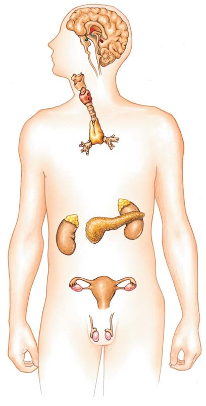
1064 Capítulo 49
Hormonas
Axones
Lóbulo posterior de la glándula pituitaria
Capilar
Vesículas que contienen hormonas
Hormona antidiurética (HAD) Oxitocina
Lóbulo anterior de la glándula pituitaria
Lóbulo posterior de la glándula pituitaria
Cerebro
Cráneo
Hipotálamo
Células neuroendocrinas
Túbulos renales
Aumenta la permeabilidad
Reabsorción de agua incrementada
Útero
Estimula la contracción
Glándulas mamarias
Estimula la liberación de leche
Lóbulo anterior de la glándula pituitaria
Tallo hipofisario
FIGURA 49-8 Síntesis y secreción de hormonas de la pituitaria posterior Las células neuroendocrinas en el hipotálamo manufacturan hormonas que más tarde son secretadas por el lóbulo posterior de la glándula pituitaria. Los axones de estas neuronas se extienden hacia el lóbulo posterior. Las hormonas están empacadas en vesículas que son transportadas a través de los axones y almacenadas en los extremos de éstos. Cuando es necesario, las hormonas son secretadas, entran en la sangre y son transportadas por el sistema circulatorio.


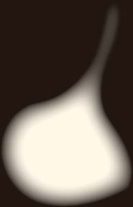


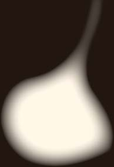
Regulación endocrina 1065
Testículos
Hormonas
Hormonas liberadoras
Capilares
Hormonas
Lóbulo anterior de la glándula pituitaria
Lóbulo posterior de la glándula pituitaria
Vena portal
Hormonas liberadoras
Vesículas que contienen hormonas liberadoras
Hipotálamo
Cráneo
Cerebro
Lóbulo anterior de la pituitaria
Lóbulo posterior de la pituitaria
Ovario
Prolactina Hormonas gonadotrópicas
Hormona estimulante de la tiroides HACT Hormona del crecimiento
Glándulas mamarias Glándula tiroides Corteza suprarrenal Músculo, hueso y otros tejidos
Produce gametos y hormonas
Produce leche
Hormonas estimulantes de los melanocitos (HEM)
Células pigmentarias en la piel
Estimula la producción de melanina en muchos vertebrados
Aumenta la tasa del metabolismo
Ayuda a regular el balance de líquidos; ayuda al cuerpo a afrontar el estrés
Promueve el crecimiento
FIGURA 49-9 Síntesis y secreción de hormonas de la pituitaria anterior El hipotálamo secreta varias hormonas liberadoras e inhibidoras específi cas que son transportadas hacia el lóbulo anterior de la glándula pituitaria por medio de venas portales. Estas hormonas regulatorias estimulan o inhiben la liberación de hormonas específi cas por células del lóbulo anterior. Éste secreta hormonas que actúan sobre una amplia gama de tejidos diana. (HACT, hormona adrenocorticotrópica).
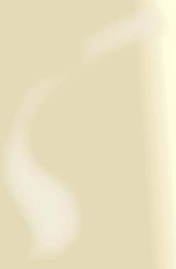


1066 Capítulo 49
también ocurre cuando el hígado produce FCSI insufi ciente o cuando los tejidos diana no responden a los FCSI. Aunque sea una miniatura, un enano pituitario tiene inteligencia normal y suele estar bien proporcionado. Si los centros de crecimiento en los huesos largos siguen activos cuando se diagnostica esta condición, a menudo puede ser tratada efi cazmente mediante la inyección de HC humana. La HC humana puede ser sintetizada por medio de tecnología de ADN recombinante. Una persona crece anormalmente alta cuando la pituitaria anterior secreta cantidades excesivas de HC durante la infancia. Esta condición se denomina gigantismo . Si la hipersecreción de HC ocurre durante la etapa adulta, el individuo no puede crecer más. En cambio, el tejido conectivo se engruesa y los huesos de las manos, pies y cara aumentan su diámetro. Esta condición se conoce como acromegalia ( acromegalia signifi ca “extremidades grandes”).
Las hormonas de la tiroides incrementan la tasa metabólica
La glándula tiroides está ubicada en la región del cuello, enfrente de la tráquea y debajo de la laringe. Las hormonas de la tiroides : la tiroxina , también conocida como T 4 , y la triyodotironina , o T 3 , son sintetizadas a partir del aminoácido tirosina y del yodo. La tiroxina tiene cuatro átomos de yodo enlazados a cada molécula; la T 3 tiene tres. En la mayoría de los tejidos diana, la T 4 es convertida en T 3 , la forma más activa (vea la fi gura 49-2c). Se describirán las acciones de la calcitonina, otra hormona secretada por la glándula tiroides, cuando se analicen las glándulas paratiroides. En los vertebrados, las hormonas de la tiroides son esenciales para el crecimiento y desarrollos normales. Estas hormonas incrementan la tasa del metabolismo en la mayoría de los tejidos del cuerpo. Después de que la T 3 se une con su receptor en el núcleo de una célula diana, el receptor del complejo T 3 induce o suprime la síntesis de enzimas específi cas y otras proteínas. Las hormonas de la tiroides también ayudan a regular la síntesis de proteínas necesarias para la diferenciación celular. Por ejemplo, los renacuajos no pueden convertirse en ranas adultas sin tiroxina.
Los sistemas de retroalimentación negativa regulan la secreción de la tiroides
La regulación de la secreción de la hormona de la tiroides depende de un ciclo de retroalimentación negativo entre la pituitaria anterior y la glándula tiroides ( FIGURA 49-10 ). Cuando la concentración de hormonas de la tiroides en la sangre sube por arriba de lo normal, la pituitaria anterior secreta menos hormona estimulante de la tiroides (TSH) :
concentración alta de hormona de la tiroides ¡ inhibe la pituitaria
anterior ¡ secreta menos TSH ¡ la glándula tiroides secreta
menos hormona ¡ homeostasis
Cuando la concentración de las hormonas de la tiroides decrece, la pituitaria secreta más TSH. La TSH actúa por medio de la AMPc para promover la síntesis y secreción de hormonas de la tiroides y también para promover un incremento en el tamaño de la glándula tiroides misma. El efecto de la TSH puede resumirse como sigue:
concentración baja de hormona de la tiroides ¡ la pituitaria anterior
secreta más TSH ¡ la glándula tiroides secreta más hormona
¡ homeostasis
En algunos mamíferos, los cambios climáticos afectan el hipotálamo. La exposición a temperaturas muy frías estimula al hipotálamo para incrementar la secreción de hormona liberadora de TSH (TRH) .
En algunos peces, anfi bios y reptiles, las HEM provocan el oscurecimiento de la piel; esto es importante para el camufl aje en algunos animales. En los humanos, las HEM suprimen el apetito y son importantes para regular la energía y el peso del cuerpo.
La hormona del crecimiento estimula la síntesis de proteínas
Que alguien sea alto o no depende de muchos factores, incluyendo los genes, la dieta y el equilibrio hormonal. La hormona del crecimiento (también denominada somatotropina ) es conocida como una hormona anabólica porque promueve el crecimiento del tejido. (El acrónimo general para la hormona del crecimiento es HC; la hormona del crecimiento humana se denomina HCH o HCh). Muchos de los efectos de la HC en el crecimiento del esqueleto son indirectos. La HC estimula a las células del hígado (y a las células de muchos otros tejidos) para producir péptidos denominados factores de crecimiento semejantes a la insulina ( FCSI ). Estos factores de crecimiento (1) promueven el crecimiento lineal del esqueleto al estimular la formación de cartílago en áreas de crecimiento de los huesos y (2) estimulan el crecimiento de tejido en general e incrementan el tamaño de los órganos al promover la síntesis de proteínas y otros procesos anabólicos. En adultos, así como en niños en desarrollo, la HC es secretada en pulsos durante todo el día. El hipotálamo regula la secreción de HC al secretar una hormona liberadora de la hormona del crecimiento (HLHC) y una hormona inhibidora de la hormona del crecimiento ( HIHC ; también denominada somatostatina ). Un nivel alto de HC en la sangre señala al hipotálamo que secrete HIHC; en respuesta, la pituitaria aminora su liberación de HC. Un nivel bajo de HC en la sangre estimula al hipotálamo para secretar HLHC, lo cual estimula a la glándula pituitaria a liberar más HC. Muchos otros factores, incluidos el nivel de azúcar, la concentración de aminoácidos y el estrés, afectan la secreción de HC. La investigación sostiene las ideas antiguas de que para crecer, los niños necesitan dormir mucho, una dieta idónea y hacer ejercicio regularmente. La secreción de HC aumenta cuando se hace ejercicio, quizá debido a que el metabolismo rápido por parte de las células musculares disminuye el nivel de glucosa en la sangre. La HC es secretada alrededor de una hora después de la aparición del sueño profundo y en una serie de pulsos de 2 a 4 horas después de una comida. El apoyo emocional también es necesario para un crecimiento idóneo. El crecimiento es retrasado en niños carentes de abrazos, caricias y otras formas de afecto, incluso cuando sus necesidades de alimentación y abrigo estén satisfechas. En casos extremos, el estrés en niños puede producir una forma de desarrollo retrasado denominado enanismo psicosocial. Algunos niños privados de afecto presentan patrones de sueño anormales, que pueden ser la base de una secreción disminuida de HC. Otras hormonas también infl uyen el crecimiento. Parece que las hormonas de la tiroides son necesarias para la secreción y función normales de HC y para la respuesta normal del tejido a los FCSI. Las hormonas sexuales deben estar presentes para que ocurra el arrebato de crecimiento adolescente. Sin embargo, la presencia de hormonas sexuales provoca a la larga la osifi cación de los centros de crecimiento en los huesos largos, de modo que ya no ocurre ningún aumento adicional en la estatura inclusive en presencia de HC.
La secreción de cantidades inapropiadas de la hormona del crecimiento resulta en desarrollo anormal
¿Alguna vez se ha preguntado por qué algunas personas no crecen normalmente? La defi ciencia extrema de HC durante la niñez ocasiona enanismo pituitario. Esta condición suele ser provocada por producción insufi ciente de HC por la glándula pituitaria. Sin embargo, el enanismo
Regulación endocrina 1067
El hipertiroidismo no ocasiona crecimiento anormal pero incrementa la tasa metabólica en 60% e incluso más. Este aumento en el metabolismo resulta en un rápido uso de nutrientes, provocando que el individuo tenga hambre y coma más. Pero esto no es sufi ciente para satisfacer las demandas de las células que metabolizan con rapidez, de modo que las personas con esta condición a menudo pierden peso. También tienden a ser nerviosas, irritables y emocionalmente inestables. La forma más común de hipertiroidismo es la enfermedad de Graves , una enfermedad autoinmune. Anticuerpos anormales se unen a receptores de TSH y los activan. Esto lleva a un incremento en la producción de hormonas de la tiroides. Un crecimiento anormal de la glándula tiroides, o bocio, puede asociarse con hipersecreción o hiposecreción (vea la fi gura 49-10b). En la enfermedad de Graves, los anticuerpos anormales que activan los receptores de TSH pueden ocasionar el desarrollo de bocio. La hiposecreción puede ser provocada por defi ciencia de yodo en la dieta. Sin yodo, la glándula no puede elaborar hormonas de la tiroides, de modo que su concentración en la sangre disminuye. La pituitaria anterior compensa al secretar grandes cantidades de TSH, que estimula el crecimiento de la glándula tiroides, algunas veces hasta proporciones gigantescas. Sin embargo, el crecimiento de la glándula no incrementa la producción de las hormonas porque el ingrediente necesario sigue faltando. Los mariscos son una fuente rica en yodo y este elemento también se agrega a la sal de mesa como suplemento nutricional. De hecho, gracias a la sal yodada, el bocio ya no es común en Estados Unidos y otros países altamente desarrollados. Sin embargo, en otras partes del mundo, cientos de miles de personas siguen padeciendo este trastorno fácilmente evitable. Debido a que resulta en hipotiroidismo, la defi ciencia de yodo también provoca retraso mental y en el desarrollo físico. Lancet , un periódico británico respetable, se ha referido a la defi ciencia de yodo como “la mayor causa prevenible de retraso mental”.
Las glándulas paratiroides regulan la concentración de calcio
Las glándulas paratiroides suelen estar incrustadas en el tejido conectivo alrededor de la glándula tiroides. Estas glándulas secretan la hormona paratiroides (HPT) , un polipéptido que ayuda a regular el nivel de calcio de la sangre y el fl uido intersticial ( FIGURA 49-11a ). La hormona paratiroide actúa por medio de un receptor acoplado a proteína G y AMPc para estimular la liberación de calcio de los huesos y para incrementar la reabsorción de calcio de los túbulos renales. También activa la vitamina D, que luego aumenta la cantidad de calcio absorbida desde el intestino. La calcitonina , una hormona péptida secretada por la glándula tiroides, trabaja de manera antagónica a la hormona paratiroide ( FIGURA
49-11b ). Cuando la concentración de calcio sube por arriba de niveles homeostáticos, la calcitonina es liberada y rápidamente inhibe la eliminación de calcio del hueso.
Los islotes del páncreas regulan la concentración de glucosa
El páncreas, además de secretar enzimas digestivas (vea el capítulo 47), es una importante glándula endocrina. Sus hormonas, insulina y glucagón, son secretadas por células que existen en grupos pequeños, los islotes de Langerhans , en todo el páncreas ( FIGURA 49-12 ). En el páncreas humano hay alrededor de un millón de islotes. Constan prin-
Esta acción provoca un aumento espectacular en la secreción de hormona de la tiroides. La tasa metabólica crece, con lo cual también aumenta la producción de calor, de modo que la temperatura del cuerpo sube. Un incremento en la temperatura del cuerpo tiene un efecto de retroalimentación negativa, limitando la secreción adicional de hormonas de la tiroides.
El mal funcionamiento de la glándula tiroides conduce a trastornos específi cos
El hipotiroidismo extremo durante la niñez y la infancia resulta en una tasa metabólica baja y puede llevar a cretinismo , una condición caracterizada por desarrollo mental y físico retardado. Cuando se diagnostica con sufi ciente antelación, el hipotiroidismo puede tratarse con hormonas de la tiroides y es posible evitar el cretinismo. Un adulto que siempre se siente somnoliento, tiene poca energía y mentalmente es lento o está confundido puede padecer hipotiroidismo. Cuando casi no hay función tiroidea, la tasa metabólica basal se reduce alrededor de 40% y el paciente desarrolla mixedema , caracterizada por una disminución de la actividad mental y física. El hipotiroidismo es tratado por administración oral de la hormona faltante.
Metabolismo Crecimiento
Estímulos ambientales (p. ej., frío, estrés)
Hipotálamo
TRH
Pituitaria anterior
Glándula tiroides
Hormonas de la tiroides (T 3 y T 4 )
TSH
Regulación de la secreción de hormona de la tiroides por retroalimentación negativa. Un incremento en la concentración de las hormonas de la tiroides por arriba de los niveles normales señala a la pituitaria anterior aminorar la producción de hormona estimulante de la tiroides (TSH). Así, las hormonas de la tiroides limitan su propia producción por retroalimentación negativa. Las flechas verdes indican estimulación; las flechas rojas indican inhibición (TRH, hormona liberadora de TSH).
La deficiencia de yodo es una causa común de bocio, crecimiento de la glándula tiroides.
John Paul Kay/Peter Arnold, Inc.
FIGURA 49-10 Animada Regulación de la secreción de hormona de la tiroides
1068 Capítulo 49
lo anterior al estimular a las células hepáticas para convertir glicógeno en glucosa, un proceso conocido como glicogenólisis o glucogenólisis . El glucagón también estimula la gluconeogénesis , la producción de glucosa a partir de otros metabolitos. El glucagón moviliza los ácidos grasos al promover la descomposición de grasa e inhibir la síntesis de triacilglicerol. Esta hormona también estimula el hígado para degradar proteínas e inhibir la síntesis de proteínas.
La concentración de glucosa regula la secreción de insulina y glucagón
La concentración de glucosa en la sangre controla directamente la secreción de insulina y glucagón ( FIGURA 49-13 ). Después de una comida, cuando el nivel de glucosa sube como resultado de la absorción intestinal, las células beta son estimuladas para secretar insulina. Luego, a medida que las células eliminan la glucosa de la sangre, disminuyendo su concentración, la secreción de insulina decrece.
alta concentración de glucosa en la sangre ¡ las células beta
secretan insulina ¡ la concentración de glucosa en la sangre
decrece ¡ homeostasis
Cuando no se ha comido por varias horas, la concentración de glucosa en la sangre comienza a bajar. Cuando disminuye de su nivel normal en ayunas de aproximadamente 90 mg de glucosa por 100 mL de sangre hasta alrededor de 70 mg de glucosa, las células alfa de los islotes
cipalmente de células beta , que secretan insulina, y células alfa , que secretan glucagón.
La insulina disminuye la concentración de glucosa en la sangre
La insulina es una hormona anabólica que regula el uso y almacenamiento de nutrientes. Estimula a las células de muchos tejidos, incluyendo el hepático, muscular y las células grasas, para tomar la glucosa de la sangre por difusión facilitada (vea el capítulo 5). Una vez que la glucosa entra en las células musculares, es usada de inmediato como combustible o almacenada como glicógeno. La insulina también impide que las células hepáticas liberen glucosa. Así, la actividad de la insulina baja el nivel de glucosa en la sangre. La insulina también ayuda a regular el metabolismo de las grasas y proteínas. Reduce el uso de ácidos grasos como combustible y en lugar de ello estimula su almacenamiento en el tejido adiposo. La insulina tiene un efecto anabólico sobre el metabolismo de las proteínas, lo que resulta en un incremento neto de proteínas en las células. Promueve la síntesis de proteínas al incrementar el número de transportadores de aminoácidos en la membrana plasmática, estimulando así el transporte de ciertos aminoácidos hacia las células. La insulina también promueve la transcripción y la traducción.
El glucagón eleva la concentración de glucosa en la sangre
Los efectos del glucagón son opuestos a los de la insulina. La acción más importante del glucagón es elevar el nivel de glucosa en la sangre. Hace
Disminución en el nivel de Ca 2+
Incremento en la concentración de Ca 2+ en la sangre
Glándula tiroides
Calcitonina
inhibe
Los osteoclastos disminuyen la liberación de Ca 2+ del hueso
Los túbulos renales disminuyen la reabsorción de Ca 2+
Glándulas paratiroides
Osteoclastos liberan Ca 2+ de la sangre
Los túbulos renales incrementan la reabsorción de Ca 2+
El intestino incrementa la absorción de Ca 2+
Disminución en la concentración de Ca 2+ en la sangre
Glándulas paratiroides
PTH
estimula Aumento en el nivel de Ca 2+
Concentración de calcio demasiado baja. Cuando la concentración de calcio disminuye por debajo del intervalo normal, las glándulas paratiroides secretan hormona paratiroide (HPT). La HPT estimula mecanismos homeostáticos que restauran la concentración de calcio idónea.
Concentración de calcio demasiado elevada. Cuando la concentración de calcio sube por arriba de su punto de ajuste, las glándulas paratiroides son inhibidas. La glándula tiroides secreta calcitonina, que inhibe la liberación de Ca 2+ del hueso y disminuye la reabsorción de Ca 2+ en los riñones.
FIGURA 49-11 Regulación de la homeostasis del calcio Las fl echas verdes indican estimulación; las fl echas rojas indican inhibición .
Regulación endocrina 1069
roso de acción rápida para mantener el nivel de glucosa dentro de límites normales. ¿Por qué es importante mantener un nivel de glucosa constante en la sangre? Recuerde que las células cerebrales suelen ser incapaces de usar otros nutrientes como combustible, por lo que dependen de un abastecimiento continuo de glucosa. Como se verá, varias otras hormonas también afectan la concentración de glucosa en la sangre.
La diabetes mellitus es un trastorno grave del metabolismo de carbohidratos La diabetes mellitus , el trastorno endocrino más común, es un grave problema de salud y de acuerdo con la Organización Mundial de la Salud, su predominio mundial está aumentando. Más de 150 millones de personas en todo el mundo padecen este trastorno. La diabetes es la causa principal de muerte prematura. Constituye un factor fundamental para enfermedad cardiovascular, ceguera, enfermedad neurológica, trastornos hepáticos y gangrena en las extremidades. (Observe que la diabetes mellitus es un trastorno completamente diferente a la diabetes insípida, que se estudió en el capítulo 48). Aproximadamente la mitad
aumentan su secreción de glucagón. La glucosa es movilizada desde su almacenamiento en las células hepáticas y la concentración de glucosa en la sangre vuelve a lo normal:
baja concentración de glucosa en la sangre ¡ las células alfa
secretan glucagón ¡ la concentración de glucosa en la sangre
aumenta ¡ homeostasis
Las células alfa responden a la concentración de glucosa dentro de su propio citoplasma, que refl eja el nivel de glucosa. Cuando el nivel de glucosa en la sangre es alto, suele haber un nivel elevado de glucosa dentro de las células alfa y la secreción de glucagón es inhibida. Observe que éstos son sistemas de retroalimentación negativa y que la insulina y el glucagón trabajan de manera antagónica para mantener la concentración de glucosa en la sangre dentro de sus límites normales. Cuando el nivel de glucosa sube, la liberación de insulina lo regresa a lo normal; cuando la concentración de glucosa baja, el glucagón actúa para subirlo de nuevo. El sistema insulina-glucagón es un mecanismo pode-
100 μ m
Islote de Langerhans
Conducto biliar común Páncreas
Conducto pancreático
Ed Reschke/Peter Arnold, Inc.
FIGURA 49-12 Un islote de Langerhans en el páncreas Dispersos por todo el páncreas, grupos de células endocrinas (como el que se muestra en esta micrografía tomada con un microscopio óptico) secretan insulina y glucagón
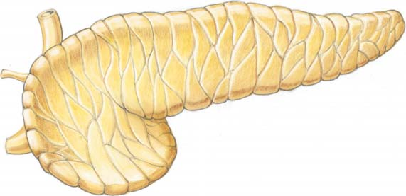
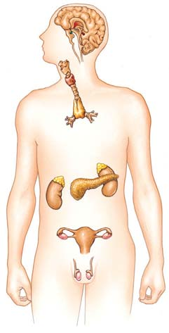
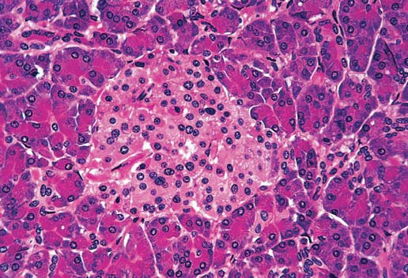
1070 Capítulo 49
- El uso de proteínas se incrementa . La falta de insulina también resulta en un aumento en la descomposición de proteínas con respecto a la síntesis de proteínas, por lo que el diabético sin tratamiento se vuelve delgado y demacrado. 4. Desequilibrio de electrolitos . Cuando los cuerpos cetónicos y la glucosa son excretados en la orina, el agua fl uye por ósmosis; como resultado, el volumen de orina aumenta. La deshidratación resultante provoca sed y desafía la homeostasis de electrolitos. Una vez que las cetonas son excretadas, también toman sodio, potasio y otros cationes con ellas, contribuyendo al desequilibrio de electrolitos.
Muchos diabéticos tipo 2 pueden preservar sus niveles de glucosa en la sangre dentro de su intervalo normal mediante procedimientos dietéticos, pérdida de peso y ejercicio regular. Cuando este método de tratamiento no es sufi ciente, el trastorno se trata con fármacos orales que estimulan la secreción de insulina y promueven sus acciones. Aproximadamente un tercio de los diabéticos tipo 2 termina por requerir inyecciones de insulina. El enorme aumento de diabetes tipo 2 constituye un problema de salud pública que resulta de un estilo de vida sedentario y el incremento en el predominio de la obesidad. Debido a que la diabetes tipo 2 está asociada con la resistencia a la insulina, los investigadores están buscando sus causas y curas al estudiar este problema metabólico. Los investigado-
de quienes padecen diabetes no lo saben; en consecuencia, no reciben tratamiento y corren un alto riesgo por sus graves efectos. La diabetes mellitus es en realidad un grupo de trastornos relacionados caracterizados por la alta concentración de glucosa en la sangre. Dos tipos principales da diabetes son el tipo 1 y el ti po 2. La diabetes tipo 1 es una enfermedad autoinmune en la que los anticuerpos marcan a las células beta para su destrucción. Las células T destruyen a las células beta, resultando en defi ciencia de insulina. Se requieren inyecciones de insulina para corregir el desequilibrio de carbohidratos que resulta. Este trastorno suele desarrollarse antes de los 30 años de edad, a menudo durante la infancia. La diabetes tipo 1 es provocada por una combinación de predisposición genética y factores ambientales, es probable que incluya la infección por un virus. Más de 90% de los diabéticos padecen diabetes tipo 2 . Este trastorno se desarrolla en forma gradual, por lo general en personas con sobrepeso. La diabetes tipo 2 suele comenzar como resistencia a la insulina , una condición en la que las células no pueden usar de manera efi caz la insulina. En la diabetes tipo 2, concentraciones normales (o mayores que lo normal) de insulina están presentes en la sangre, pero las células diana no pueden usarla. Perturbaciones metabólicas semejantes ocurren en ambos tipos de diabetes mellitus: interrupción del metabolismo de carbohidratos, grasas y proteínas, y desequilibrio de electrolitos.
- Disminuye el uso de glucosa . En un diabético, las células tienen difi cultades para tomar la glucosa de la sangre y su acumulación provoca hiperglicemia. En vez de la concentración normal en ayunas de aproximadamente 90 mg de glucosa por 100 mL de sangre, el nivel puede exceder de 140 mg por 100 mL y alcanzar concentraciones de más de 500 mg por 100 mL. Recuerde del capítulo 48 que cuando la concentración de glucosa excede su transporte tubular máximo (TTM) , la velocidad máxima a la que puede ser reabsorbida, la glucosa es excretada en la orina. A pesar de las grandes cantidades de glucosa en la sangre, las células dependientes de insulina en un diabético pueden tomar sólo alrededor de 25% de la glucosa que requieren para alimentarse. 2. La movilización de grasas se incrementa . Las células convierten la grasa y proteína en energía. La ausencia de insulina promueve la movilización de las reservas de grasa para proporcionar nutrientes a la respiración celular. Pero por desgracia, el nivel de lípidos en la sangre puede quintuplicar el nivel normal, llevando al desarrollo de aterosclerosis (vea el capítulo 44). El incremento en el metabolismo de las grasas también aumenta la formación de cuerpos cetónicos, que se acumulan en la sangre. Esta acumulación puede ocasionar cetoacidosis , una condición en la que los líquidos del cuerpo y de la sangre se vuelven demasiado ácidos. Cuando el nivel de cetona en la sangre aumenta, las cetonas aparecen en la orina, otra indicación clínica de diabetes mellitus. En caso de ser grave, la cetoacidosis puede conducir a coma y muerte.
La insulina y el glucagón trabajan antagónicamente para regular la concentración de glucosa en la sangre.
Alto
Bajo
Nivel de glucosa
Tiempo
Intervalo normal
Estimula a las células beta
Estimula a las células alfa
Estresante: ayuno
Estresante: consumir carbohidratos
LIBERACIÓN DE INSULINA: (a) Estimula a las células para tomar glucosa (b) Estimula a los músculos y al hígado para almacenar glucosa como glicógeno (c) Estimula el almacenamiento de aminoácidos y grasa
LIBERACIÓN DE GLUCAGÓN: (a) Estimula la movilización de aminoácidos y grasas (b) Estimula la gluconeogénesis (c) Estimula al hígado para liberar glucosa almacenada (glicogenólisis)
INTERVALO HOMEOSTÁTICO
FIGURA 49-13 Animada Regulación de la concentración de glucosa Cuando la concentración de glucosa en la sangre sube por arriba de lo normal, las células beta secretan insulina. Esta hormona disminuye la concentración de glucosa en la sangre, restaurando así la homeostasis. Cuando la concentración de glucosa en la sangre disminuye por debajo de lo normal, las células alfa secretan glucagón. Esta hormona aumenta la concentración de glucosa en la sangre, restaurando así la homeostasis.
PUNTO CLAVE
Regulación endocrina 1071
hormonas que ayudan a regular el metabolismo y que apoyan al cuerpo para responder al estrés.
La médula suprarrenal inicia una reacción de alarma
La médula suprarrenal es una glándula neuroendocrina acoplada al sistema nervioso simpático. Se desarrolla a partir de tejido neuronal y su secreción es controlada por los nervios simpáticos. La médula suprarrenal secreta epinefrina y norepinefrina . Químicamente, estas hormonas son muy semejantes; son derivados de aminoácidos que pertenecen al grupo químico conocido como catecolaminas (vea la fi gura 49-2c). La mayor parte de la producción hormonal de la médula suprarrenal es epinefrina. Recuerde que la norepinefrina también sirve como neurotransmisor liberado por las neuronas simpáticas y por algunas neuronas en el sistema nervioso central (vea el capítulo 41). En condiciones normales, la médula suprarrenal secreta continuamente pequeñas cantidades de epinefrina y norepinefrina. Su secreción está bajo control neuronal. Cuando surge ansiedad, el hipotálamo envía señales vía los nervios simpáticos a la médula suprarrenal. Las neuronas simpáticas liberan acetilcolina, la cual estimula a la médula suprarrenal para liberar cantidades mayores de epinefrina y norepinefrina. Durante una situación estresante, las hormonas medulares suprarrenales inician una reacción de alarma que le permite al individuo pensar más rápido, luchar con más tenacidad o correr más rápido que lo normal. La tasa metabólica aumenta hasta en 100%. La sangre es redirigida a aquellos órganos esenciales para la acción de emergencia ( FIGURA
49-15 ). Los vasos sanguíneos que van al cerebro, músculos y corazón son dilatados, mientras que los de la piel y los riñones son constreñidos. La constricción de los vasos sanguíneos que surten a la piel tiene la ventaja
res han descubierto una intensa relación entre el incremento en el tejido graso y la resistencia a la insulina. Cuando las personas resistentes a la insulina pierden peso, se vuelven más sensibles a ella. Los investigadores están probando dos hipótesis: la hipótesis de la infl amación y la hipótesis de la sobrecarga de lípidos. La hipótesis de la infl amación sostiene que los macrófagos son atraídos a células grasas agrandadas, que son abundantes en las personas obesas. Los macrófagos liberan citocinas y otras señales infl amatorias que extinguen la vía de señalización de la insulina en las fi bras musculares. Según la hipótesis de la sobrecarga de lípidos , cuando las células grasas están totalmente agrandadas y no pueden almacenar más grasa adicional, rezuman ácidos grasos. La grasa se acumula en las fi bras musculares y células hepáticas. Los diacilgliceroles (DAG) acumulados inhiben la vía de señalización de la insulina. Ambas hipótesis pueden ser válidas. El tejido adiposo produce varias hormonas y otras moléculas de señalización que desempeñan un papel en la resistencia a la insulina y en la diabetes. Algunas de éstas son la resistina y la adiponectina. La resistina es antagónica a la acción de la insulina, por tanto, contribuye a la resistencia a la insulina. La adiponectina promueve los efectos de la insulina, pero las personas obesas la producen en cantidades reducidas. La resistencia a la insulina posee un componente genético poderoso y algunos investigadores están buscando genes específi cos que pudieran estar implicados. Otros se han centrado en la educación y en los cambios en el estilo de vida. Más de 20% de los niños obesos tienen alterada la tolerancia a la glucosa, un signo de advertencia temprano de la diabetes. La alteración de la tolerancia a la glucosa, que afecta a más de 200 millones de personas en todo el mundo, se defi ne como hiperglicemia (una concentración de glucosa en la sangre que es anormalmente alta) la cual sigue a la ingestión de una gran cantidad de glucosa (una carga de glucosa).
En la hipoglicemia la concentración de glucosa en la sangre es demasiado baja
La baja concentración de glucosa en la sangre, o hipoglicemia , algunas veces ocurre en personas que más adelante desarrollan diabetes. Estas personas pueden tener tolerancia a la glucosa alterada en la cual los islotes reaccionan de manera exagerada a la demanda de glucosa. Cuando se ingieren carbohidratos, hay un retraso en la respuesta a la insulina, seguida después de alrededor de 3 horas por demasiada secreción de la hormona. Esta hipersecreción hace bajar los niveles de glucosa y la persona se siente somnolienta. Si esta reacción es grave, la persona puede volverse descoordinada e incluso perder el conocimiento. La hipoglicemia grave puede desarrollarse si los diabéticos reciben inyecciones de insulina en exceso o si los islotes, a causa de un tumor, secretan demasiada insulina. La concentración de glucosa en la sangre puede entonces disminuir drásticamente, privando a las células cerebrales de su suministro de combustible necesario. Estos eventos pueden conducir a un choque de insulina, una condición en la que el paciente puede parecer ebrio o perder la conciencia, sufrir convulsiones e incluso morir.
Las glándulas suprarrenales ayudan al cuerpo a responder al estrés
Las dos glándulas suprarrenales son pequeñas masas amarillas de tejido que están en contacto con los extremos superiores de los riñones ( FIGURA 49-14 ). Cada glándula consta de una porción central, la médula suprarrenal y una gran sección exterior, la corteza suprarrenal . Aunque están unidas anatómicamente, la médula y la corteza suprarrenales se desarrollan a partir de diferentes tipos de tejido en el embrión y funcionan como glándulas diferentes. Sin embargo, ambas secretan
Corteza suprarrenal
Glándula suprarrenal
Riñón
Médula suprarrenal
FIGURA 49-14 Glándula suprarrenal Las glándulas suprarrenales están situadas arriba de los riñones. Cada glándula consta de una médula suprarrenal central rodeada por una corteza suprarrenal.
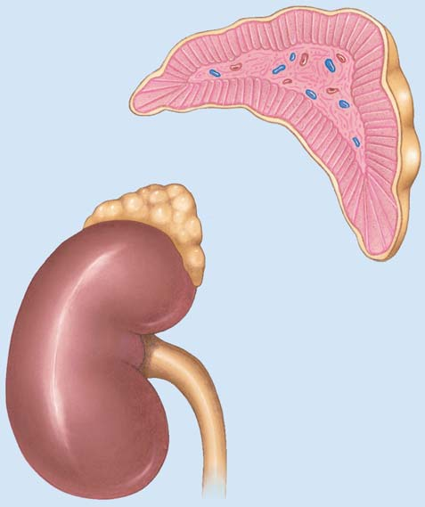
1072 Capítulo 49
Aunque la corteza suprarrenal produce más de 30 tipos de esteroides, secreta sólo tres tipos de hormonas en cantidades importantes: precursores de hormonas sexuales, mineralocorticoides y glucocorticoides. En ambos sexos, la corteza suprarrenal secreta precursores de hormonas sexuales, como andrógenos (hormonas masculinizantes). Ciertos tejidos convierten los precursores de hormonas sexuales en testosterona , la hormona masculina más importante, y estradiol , la hormona femenina más importante. En los hombres, la producción de andrógeno por la corteza suprarrenal no es signifi cativa porque los testículos producen testosterona. No obstante, en las mujeres, la corteza suprarrenal secreta el andrógeno usado para producir la mayor parte de la testosterona que circula en la sangre.
adicional de disminuir la pérdida de sangre en caso de hemorragia (y explica la palidez repentina que acompaña al temor). Al mismo tiempo, el corazón late más rápido. La intensidad de la contracción muscular aumenta. Los umbrales en el sistema activador reticular del cerebro son disminuidos, de modo que la persona se vuelve más alerta (vea el capítulo 42). Las hormonas suprarrenales medulares también suben los niveles de ácidos grasos y glucosa en la sangre, asegurando combustible necesario para la energía adicional.
La corteza suprarrenal ayuda al cuerpo a tolerar el estrés crónico La corteza suprarrenal sintetiza hormonas esteroides a partir de colesterol (que a su vez se produce en el hígado a partir de la acetil coenzima A).
ESTRÉS
HIPOTÁLAMO CRF
PITUITARIA
HACT
CORTEZA SUPRARRENAL
Cortisol
Moviliza grasas
Estimula el transporte de aminoácidos hacia las células hepáticas
Inhibe las reacciones alérgicas
Reduce la inflamación
Conversión de otros nutrientes en glucosa
Proporciona nutrientes para la respiración celular
Eleva el nivel de azúcar en la sangre
NERVIOS SIMPÁTICOS
MÉDULA SUPRARRENAL
Epinefrina y norepinefrina
Vasos sanguíneos
Estimula la conversión de glicógeno en glucosa
Cerebro Corazón
Disminuye los umbrales en el sistema activador reticular
Constriñe los vasos sanguíneos en la piel y en los riñones
Dilata los vasos sanguíneos en los músculos y el cerebro
Sube el nivel de azúcar
Funciona más tiempo, resiste con más fuerza
Aumenta el gasto cardiaco
FIGURA 49-15 Respuesta al estrés Las glándulas suprarrenales ayudan al cuerpo a responder a experiencias estresantes. (RAS, sistema activador reticular; FLC, factor liberador de corticotropina; HACT, hormona adrenocorticotrópica).
Regulación endocrina 1073
infl amación al disminuir la permeabilidad capilar, lo cual reduce la hinchazón. Además, reducen los efectos de la histamina, por lo que se usan para tratar los síntomas de alergias. Cuando se usan en grandes cantidades durante períodos largos, los glucocorticoides pueden provocar graves efectos colaterales. Aunque ayudan a estabilizar las membranas lisosómicas de modo que no destruyan tejidos con sus poderosas enzimas, la habilidad de los lisosomas para degradar moléculas extrañas también se reduce. Los glucocorticoides disminuyen la producción de interleucina-1 al bloquear la inmunidad mediada por células y disminuir la capacidad del paciente para combatir infecciones. Otros efectos colaterales incluyen úlceras, hipertensión, diabetes mellitus y aterosclerosis. Las cantidades anormalmente altas de glucocorticoides, ya sea por enfermedad o por medicación con esteroides, puede resultar en la enfermedad de Cushing . En esta condición, el exceso de glucosa es convertido en grasa que se deposita alrededor del tronco. El edema hace que la cara del paciente adquiera una apariencia semejante a la de la luna llena. El nivel de glucosa en la sangre puede subir hasta 50% por arriba de lo normal, produciendo diabetes suprarrenal . Si esta condición persiste durante varios meses, las células beta en el páncreas pueden “consumirse” por secretar cantidades excesivas de insulina, llevando a diabetes mellitus permanente. La reducción en la síntesis de proteínas provoca debilidad y una disminución en las respuestas inmunológicas.
Se conocen muchas otras hormonas
Muchos otros tejidos del cuerpo secretan hormonas. La glándula pineal, ubicada en el cerebro, produce melatonina, que es un derivado del aminoácido triptófano y afecta los ritmos biológicos y la aparición de la madurez sexual. En los humanos, la melatonina favorece el inicio del sueño. La exposición a la luz suprime la secreción de melatonina. Varias hormonas secretadas por el tracto digestivo y por el tejido adiposo regulan los procesos digestivos (vea el capítulo 47). La glándula timo produce timosina , una hormona que desempeña un papel en las respuestas inmunológicas. El factor natriurético auricular (FNA) , secretado en la aurícula del corazón, promueve la excreción de sodio y disminuye la presión arterial (vea el capítulo 48). Las hormonas reproductivas se analizan en el capítulo 50.
Repaso
■ ¿Por qué el hipotálamo es considerado el vínculo entre los sistemas nervioso y endocrino? ¿Cuál es el papel del lóbulo anterior de la pituitaria? ¿Y del lóbulo posterior?
■ ¿Cómo es regulada la secreción de hormona de la tiroides y de hormona paratiroide?
■ ¿Cuáles son las acciones antagónicas de la insulina y el glucagón en la regulación del nivel de glucosa en la sangre? ¿Qué es la resistencia a la insulina?
■ ¿Cuáles son las acciones de la epinefrina y la norepinefrina? ¿Y del cortisol?
■ ¿En qué se diferencian la regulación de la médula suprarrenal y la regulación de la corteza suprarrenal?
El mineralocorticoide más importante es la aldosterona . (Recuerde del capítulo 48 que la aldosterona ayuda a regular el equilibrio de líquidos al ajustar el equilibrio de sal). En respuesta a la aldosterona, los riñones reabsorben más sodio y excretan más potasio. Como resultado del incremento de sodio, el volumen del fl uido extracelular aumenta, lo cual resulta en mayor volumen de sangre y presión arterial alta. Cuando las glándulas suprarrenales no producen sufi ciente aldosterona, en la orina son excretadas grandes cantidades de sodio. El agua sale del cuerpo con el sodio (debido a la presión osmótica), y el volumen de sangre puede reducirse tan notoriamente que el paciente muere por baja presión arterial. El cortisol , también denominado hidrocortisona, representa alrededor de 95% de la actividad glucocorticoide de la corteza suprarrenal humana (vea la fi gura 49-2b). El cortisol ayuda a asegurar el abastecimiento sufi ciente de combustible para las células cuando el cuerpo está sometido a estrés. Su acción principal es estimular la producción de glucosa a partir de otros nutrientes en las células hepáticas. El cortisol ayuda a proporcionar nutrientes para la producción de glucosa al estimular el transporte de aminoácidos hacia las células hepáticas (vea la fi gura 49-15). También promueve la movilización de grasas de modo que el glicerol de las moléculas de triacilglicerol esté disponible para su conversión en glucosa. Estas acciones aseguran que la glucosa y el glicógeno sean producidos en el hígado, y que la concentración de glucosa en la sangre suba. Por tanto, la corteza suprarrenal provee un sistema de respaldo importante para la médula suprarrenal, asegurando el abastecimiento idóneo de glucosa cuando el cuerpo sufre de estrés y requiere energía adicional. Durante el estrés, el cerebro y las glándulas suprarrenales trabajan juntos para ayudar al cuerpo a responder con efi ciencia (vea la fi gura 49-15; también vea Preguntas acerca de: La neurobiología de la experiencia traumática , en el capítulo 42). Casi cualquier tipo de estrés estimula al hipotálamo para secretar factor liberador de corticotropina (FLC) , que estimula la secreción de hormona adrenocorticotrópica (HACT) por parte de la pituitaria anterior. Esta hormona regula la secreción tanto de glucocortidoide como de aldosterona. La HACT es tan poderosa que puede resultar en un incremento hasta de 20 veces en la secreción de cortisol en cuestión de minutos. Cuando el cuerpo no sufre de estrés, los altos niveles de cortisol en la sangre inhiben la secreción de FLC por el hipotálamo y de HACT por la pituitaria. La enfermedad de Addison resulta cuando la corteza suprarrenal produce cantidades insufi cientes de aldosterona y cortisol. Este trastorno suele ser causado más comúnmente por la destrucción autoinmune de la corteza suprarrenal. La reducción de cortisol evita que el cuerpo regule la concentración de glucosa en la sangre porque el hígado no es capaz de sintetizar sufi ciente glucosa. El paciente con defi ciencia de cortisol también pierde la capacidad de responder al estrés. Si los niveles de cortisol se deprimen de manera importante, incluso el estrés de infecciones leves puede provocar la muerte. Los glucocorticoides se usan clínicamente para reducir la infl amación en reacciones alérgicas, infecciones, artritis y ciertos tipos de cáncer. Estas hormonas inhiben la producción de prostaglandinas (que son mediadoras de la infl amación). Los glucocorticoides también reducen la
1074 Capítulo 49
49.3 (página 1057)
5 Comparar el mecanismo de acción de pequeñas hormonas solubles en lípidos con el de las hormonas hidrófi las; incluir el papel de segundos mensajeros, como el AMP cíclico.
■ Las hormonas esteroides y las hormonas de la tiroides son pequeñas molécu las solubles en lípidos que pasan a través de la membrana plasmática y se combinan con receptores dentro de las células diana; el complejo hormona-receptor puede activar o reprimir la transcripción de la codifi cación de ARN para proteínas específi cas.
■ Las hormonas péptidas son hidrófi las y no entran en las células diana. Se combinan con receptores sobre la membrana plasmática de células diana. Muchas hormonas se unen a receptores acoplados a proteína G que actúan vía la transducción de señales . Una señal de hormona extracelular es transducida en una señal intracelular por el receptor.
■ La mayoría de las hormonas péptidas son primeros mensajeros que llevan a cabo sus acciones por medio de segundos mensajeros , como el AMP cíclico (AMPc) . El receptor acoplado a proteína G activa una proteína G . La proteína G estimula o inhibe una enzima que afecta al segundo mensajero. Por ejemplo, la proteína G estimula o inhibe la adenilil ciclasa , la enzima que cataliza la conversión de ATP en AMPc.
■ Muchos segundos mensajeros estimulan la actividad de proteínas quinasas , enzimas que fosforilan proteínas específi cas que afectan algunos procesos celulares.
■ Algunas proteínas G usan derivados de fosfolípidos como segundos mensajeros. El inositol trifosfato (IP 3 ) y el diacilglicerol (DAG) son segundos mensajeros que elevan la concentración de calcio y activan enzimas. Los iones calcio se unen con calmodulina , que activa ciertas enzimas.
■ Los receptores de tirosina quinasas son receptores asociados a enzimas que se unen con factores de crecimiento, incluyendo insulina y factor de crecimiento nervioso.
49.4 (página 1060)
6 Identifi car cuatro funciones de las neurohormonas de invertebrados y describir la regulación del desarrollo de insectos.
■ Las hormonas de los invertebrados y las neurohormonas ayudan a regular el metabolismo, el crecimiento y desarrollo, la regeneración, los cambios de color, la muda de piel, la metamorfosis, la reproducción y el comportamiento.
■ Las hormonas controlan el desarrollo en los insectos. Cuando las células endocrinas en el cerebro del insecto son estimuladas por algún factor ambiental, secretan hormona cerebral (BH) . La BH estimula a las glándulas protorácicas para producir hormona de la muda (HM) , que estimula el crecimiento y la muda de piel.
■ En un insecto inmaduro, los corpora allata secretan hormona juvenil (HJ) , que suprime la metamorfosis en cada muda larvaria. La cantidad de HJ decrece con las mudas sucesivas.
49.5 (página 1060)
7 Identifi car las glándulas endocrinas clásicas de los vertebrados y describir las acciones de sus hormonas. Describir los efectos de la hipersecreción y la hiposecreción sobre la homeostasis.
49.1 (página 1053)
1 Comparar la función del sistema endocrino con la del sistema nervioso y describir cómo estos sistemas trabajan juntos para regular los procesos del cuerpo.
■ El sistema endocrino consta de glándulas, células y tejidos endocrinos que secretan hormonas , señales químicas que regulan procesos fi siológicos. La mayoría de las respuestas endocrinas son lentas, pero de larga duración. El sistema endocrino envía señales a una amplia gama de células diana .
■ El sistema nervioso responde rápidamente a estímulos al transmitir señales eléctricas y químicas. Las neuronas envían señales a otras neuronas, células musculares y células glandulares, incluidas las células endocrinas. El sistema nervioso ayuda a regular muchas respuestas endocrinas. 2 Resumir la regulación de la acción endocrina por medio de sistemas de retroalimentación negativa.
■ La secreción de hormonas suele estar regulada por sistemas de retroalimentación negativa . Una hormona es liberada en respuesta a algún cambio en un estado estable y dispara una respuesta que contrarresta la condición modifi cada; este proceso restaura la homeostasis. 3 Identifi car cuatro grupos químicos principales a los que son asignadas las hormonas y proporcionar dos ejemplos de cada uno.
■ Las prostaglandinas y la hormona juvenil de los insectos son derivados de ácidos grasos . Las hormonas secretadas por la corteza suprarrenal, los ovarios y los testículos, así como la hormona de la muda de piel de los insectos, son hormonas esteroides .
■ Las hormonas de la tiroides y la epinefrina son derivados de aminoácidos . La hormona antidiurética (HAD) y el glucagón son ejemplos de hormonas péptidas . La insulina es una proteína pequeña.
Observe los mecanismos de acción de las hormonas péptidas y esteroides al hacer clic en las fi guras en CengageNOW.
49.2 (página 1055)
4 Comparar cuatro tipos de señalización endocrina.
■ En la señalización endocrina clásica , glándulas endocrinas discretas, glándulas sin conductos, secretan hormonas hacia el fl uido intersticial. Las hormonas son transportadas por la sangre. Se unen con receptores sobre células diana específi cas o dentro de ellas.
■ En la señalización neuroendocrina , las neuronas secretan neurohormonas . Éstas son acarreadas por los axones y luego secretadas; suelen ser transportadas por la sangre.
■ En la señalización autocrina , una hormona (o alguna otra molécula de señalización) es secretada hacia el fl uido intersticial y luego actúa sobre la misma célula que la produjo. En la señalización paracrina , una hormona (o alguna otra molécula de señalización) se difunde por el fl uido intersticial y actúa sobre células diana próximas.
■ Algunos reguladores locales son considerados hormonas; usan señalización autocrina o paracrina. Los reguladores locales incluyen factores de crecimiento , péptidos que estimulan la división y el desarrollo celular, así como las prostaglandinas , un grupo de hormonas locales que ayudan a regular muchos procesos metabólicos.
■ ■ RESUMEN: ENFOQUE EN LOS OBJETIVOS DE APRENDIZAJE
Célula endocrina
Respuesta
Hormona
Hormona
Receptor
Trasportada en la sangre
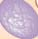
Regulación endocrina 1075
■ Las glándulas paratiroides secretan la hormona paratiroide (HPT) , que regula el nivel de calcio en la sangre. La hormona paratiroide incrementa la concentración de calcio al estimular la liberación de este elemento desde los huesos, aumentando su reabsorción por los túbulos renales y desde el intestino.
■ La calcitonina , secretada por la glándula tiroides, actúa antagónicamente con la hormona paratiroide. 10 Contrastar las acciones de la insulina y el glucagón, y describir la diabetes mellitus y la hipoglicemia, incluyendo los efectos metabólicos de estos trastornos.
■ Los islotes de Langerhans en el páncreas secretan insulina y glucagón . La secreción de éstas es regulada directamente por la concentración de glucosa. La insulina estimula a las células para tomar glucosa de la sangre, con lo cual baja la concentración de glucosa sanguínea. El glucagón sube la concentración de glucosa en la sangre al estimular la conversión de glicógeno en glucosa y al estimular la producción de glucosa a partir de otros nutrientes.
■ En la diabetes mellitus , la defi ciencia de insulina o la resistencia a la insulina resulta en disminución del uso de la glucosa, aumento en la movilización de grasas, aumento en el uso de proteínas y desequilibrio de electrolitos. En la hipoglucemia, la tolerancia alterada a la glucosa resulta en una respuesta retrasada a la insulina, seguida por hipersecreción de ésta. La concentración de glucosa disminuye, ocasionando somnolencia. 11 Resumir las acciones y la regulación de las hormonas suprarrenales, incluyendo su papel en la respuesta del cuerpo al estrés.
■ Las glándulas suprarrenales secretan hormonas que ayudan al cuerpo a responder al estrés y son importantes en la regulación del equilibrio de líquidos.
■ La médula suprarrenal secreta epinefrina y norepinefrina , hormonas que incrementan el ritmo cardiaco y la intensidad de la contracción muscular. Estas hormonas redirigen la sangre hacia los órganos necesarios para pelear o huir. La médula suprarrenal es regulada por el sistema nervioso.
■ La corteza suprarrenal secreta hormonas sexuales; mineralocorticoides , como la aldosterona ; y glucocorticoides , como el cortisol . La aldosterona aumenta la tasa de reabsorción de sodio y la excreción de potasio por los riñones.
■ Durante el estrés, la corteza suprarrenal asegura el suministro idóneo de combustible para las células de rápida metabolización. El cortisol promueve la síntesis de glucosa a partir de otros nutrientes. Durante el estrés, el hipotálamo secreta factor liberador de corticotropina (FLC) , que estimula a la glándula pituitaria anterior para secretar hormona adrenocorticotrópica (HACT) . La HACT regula la secreción de aldosterona y cortisol.
Aprenda más sobre la respuesta hormonal al estrés al hacer clic en la fi gura en CengageNOW.
■ Consulte en la tabla 49-1 una descripción de las glándulas endocrinas principales y sus acciones. Las hormonas de los vertebrados regulan el crecimiento y desarrollo, el equilibrio de sal y líquidos, y muchos aspectos del metabolismo y el comportamiento.
■ La hiposecreción (producción reducida anormalmente) o la hipersecreción (producción aumentada anormalmente) de hormonas conduce a la interrupción de la homeostasis y a trastornos endocrinos específi cos. 8 Describir los mecanismos por los cuales el hipotálamo y la glándula pituitaria integran funciones regulatorias; resumir las acciones de las hormonas hipotalámica y pituitaria.
■ La regulación nerviosa y endocrina está integrada en el hipotálamo , que regula la actividad de la glándula pituitaria .
■ Las neurohormonas oxitocina y hormona antidiurética (HAD) son producidas por el hipotálamo y liberadas por el lóbulo posterior de la pituitaria. La oxitocina estimula la contracción del útero y estimula la expulsión de leche por las glándulas mamarias. La HAD estimula la reabsorción de agua por los túbulos renales.
■ El hipotálamo secreta hormonas liberadoras y hormonas inhibidoras que regulan la salida de hormonas del lóbulo anterior de la glándula pituitaria.
■ El lóbulo anterior de la glándula pituitaria secreta prolactina, hormonas estimulantes de los melanocitos, hormona del crecimiento y varias hormonas trópicas que estimulan otras glándulas endocrinas. Las hormonas estimulantes de los melanocitos (HEM) suprimen el apetito y son importantes en la regulación de la energía y el peso del cuerpo. La prolactina estimula las glándulas mamarias para producir leche.
■ La hormona del crecimiento (HC) es una hormona anabólica que estimula el crecimiento de cuerpo al promover la síntesis de proteínas. La HC estimula al hígado para producir factores de crecimiento similares a la insulina (FCSI) , que promueven el crecimiento del esqueleto y de los tejidos en general.
Explore las glándulas y hormonas endocrinas humanas al hacer clic en las fi guras en CengageNOW.
9 Describir las acciones de las hormonas de la tiroides y paratiroide, su regulación y los efectos de su mal funcionamiento.
■ La glándula tiroides secreta hormonas de la tiroides; tiroxina , o T 4 , y triyodotironina , o T 3 . Las hormonas de la tiroides estimulan la tasa del metabolismo.
■ La regulación de la secreción tiroidea depende principalmente de un sistema de retroalimentación negativa entre la glándula pituitaria anterior y la glándula tiroides.
■ La hiposecreción de tiroxina durante la niñez puede conducir a cretinismo; durante la etapa adulta puede resultar en mixedema . El bocio , un agrandamiento anormal de la glándula tiroides, está asociado con la hiposecreción y la hipersecreción. La causa más común de hipertiroidismo es la enfermedad de Graves , de carácter autoinmune.
¿Cuál de los siguientes no es verdadero acerca de las glándulas endocrinas? (a) secretan hormonas (b) tienen conductos (c) su producto suele ser transportado por la sangre (d) suelen ser reguladas por retroalimentación negativa (e) un animal experimental muestra síntomas de defi ciencia cuando se eliminan
Una célula secreta un producto que se difunde a través del fl uido intersticial y actúa sobre células próximas. Esto es un ejemplo de (a) secreción neuroendocrina (b) señalización autocrina (c) señalización paracrina (d) regulación endocrina clásica (e) función de una hormona péptida
¿Cuál(es) de las siguientes es (son) verdadera(s) acerca de las hormonas esteroides? (a) hidrófi las (b) secretadas por la pituitaria posterior (c) suelen trabajar a través de proteínas G y AMP cíclico (d) suelen unirse con receptores en el núcleo y afectar la transcripción (e) a y c
¿Cuál de los siguientes activa un se gundo mensajero? (a) complejo receptor de hormonas (b) iones calcio (c) inositol trifosfato (IP 3 ) (d) AMP cíclico (e) diacilglicerol (DAG)
EVALÚE SU COMPRENSIÓN
1076 Capítulo 49
¿Cuál de las siguientes parejas no es correcta? (a) neurohormona; hormona cerebral del insecto (b) calcio; calmodulina (c) lóbulo posterior de la pituitaria; hormona liberadora (d) lóbulo anterior de la pituitaria; hormona del crecimiento (e) hiposecreción de la tiroides; cretinismo
La hormona del crecimiento (a) envía señales al hipotálamo para producir una hormona liberadora (b) es regulada principalmente por el nivel de calcio (c) es una hormona catabólica (d) estimula la tasa metabólica (e) estimula al hígado para producir factores de crecimiento parecidos a la insulina
Ordene los siguientes eventos en la secuencia correcta. 1. alta concentración de hormona de la tiroides 2. pituitaria anterior inhibida 3. homeostasis 4. nivel bajo de hormona estimulante de la tiroides 5. la glándula tiroides secreta menos hormona de la tiroides (a) 1, 2, 4, 5, 3 (b) 5, 4, 3, 2, 1 (c) 1, 2, 5, 4, 3 (d) 4, 5, 2, 3, 1 (e) 1, 4, 2, 5, 3
Ordene los siguientes eventos en la secuencia correcta. 1. aumenta la concentración de glucosa en la sangre 2. las células alfa en los islotes son estimuladas 3. homeostasis 4. la concentración de glucosa en la sangre disminuye 5. aumenta la secreción de glucagón (a) 1, 2, 3, 5, 4 (b) 5, 4, 2, 1, 3 (c) 1, 2, 5, 4, 3 (d) 4, 2, 5, 1, 3 (e) 4, 5, 1, 2, 3
¿Cuál de los siguientes hechos ocurre en la diabetes? (a) disminución del uso de glucosa (b) disminución del metabolismo de grasas (c) disminución del uso de proteínas (d) aumento en la concentración de hormona liberadora de TSH (e) b y c
¿Cuál de las siguientes es una acción de la epinefrina? (a) disminuye el uso de glucosa (b) incrementa el gasto cardiaco (c) constriñe los vasos sanguíneos en el cerebro (d) reduce la infl amación (e) moviliza las grasas
La aldosterona es (a) liberada por la pituitaria posterior (b) es un andrógeno (c) su secreción es favorecida por un incremento en la hormona estimulante de la tiroides (d) es una enzima que convierte la epinefrina en norepinefrina (e) incrementa la reabsorción de sodio
Rotule el diagrama. Use la fi gura 49-7 para comprobar sus respuestas.
¿De qué manera los receptores imparten especifi cidad dentro del sistema endocrino? ¿Cuáles podrían ser algunas ventajas de tener mecanismos complejos para la acción hormonal (como segundos mensajeros)?
¿Por qué es importante mantener un nivel de glucosa constante en la sangre? Varias hormonas analizadas en este capítulo afectan el metabolismo de carbohidratos. ¿Por qué es importante tener más de una? ¿Cómo interactúan?
La inyección de demasiada insulina podría ocasionar que un diabético experimente un choque de insulina, en el cual la persona parece ebria o puede perder la conciencia, sufrir convulsiones e incluso morir. Con base en lo que sabe sobre las acciones de la insulina, explique las causas fi siológicas del choque de insulina.
VÍNCULO CON LA EVOLUCIÓN. Parece que el receptor de la aldosterona evolucionó mucho antes que la aldosterona misma. Proponga una hipótesis para explicar cómo pudo ocurrir esto.
CIENCIA, TECNOLOGÍA Y SOCIEDAD. La hipótesis del “gen ahorrativo” sostiene que los genes que incrementan el riesgo de padecer diabetes tipo 2 permiten la utilización efi ciente de los alimentos (y la acumulación de grasa) cuando se dispone de ellos para incrementar las posibilidades de sobrevivir en épocas de escasez. Use esta hipótesis para explicar el aumento en la tasa de diabetes en Estados Unidos.
Preguntas adicionales están disponibles en CengageNOW en www.cengage.com/login.
PENSAMIENTO CRÍTICO